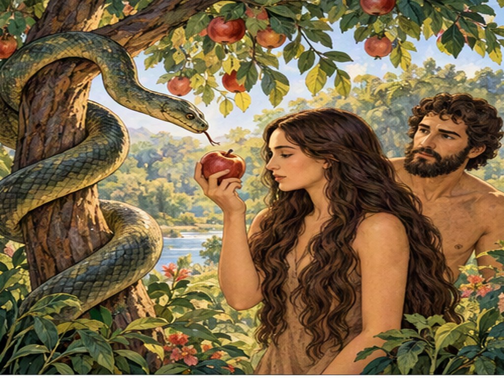
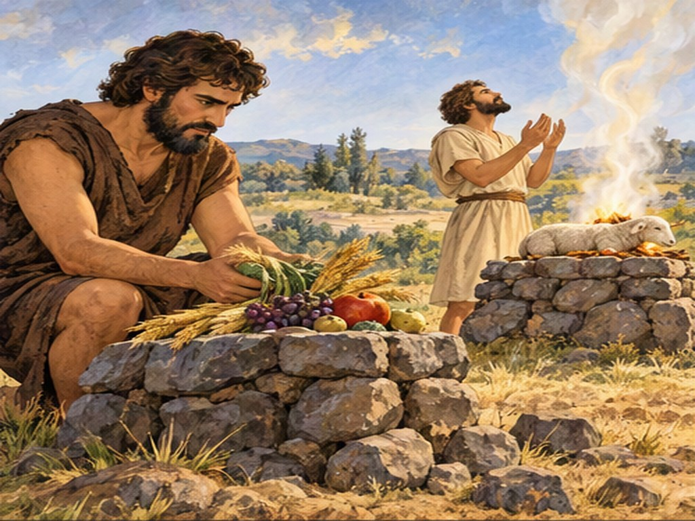
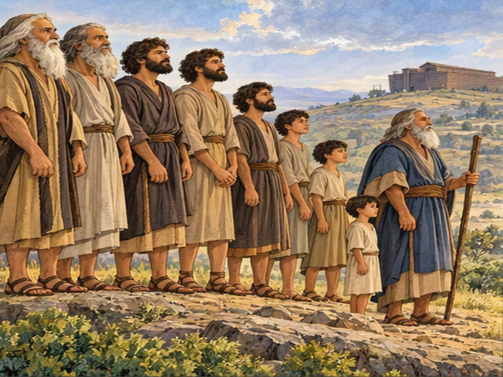

בְּרֵאשִׁ֖ית בָּרָ֣א אֱלֹהִ֑ים אֵ֥ת הַשָּׁמַ֖יִם וְאֵ֥ת הָאָֽרֶץ׃
בראשית ברא אלהים את השמים ואת הארץ׃
Au commencement, Dieu créa le ciel et la terre.
וְהָאָ֗רֶץ הָיְתָ֥ה תֹ֙הוּ֙ וָבֹ֔הוּ וְחֹ֖שֶׁךְ עַל־פְּנֵ֣י תְה֑וֹם וְר֣וּחַ אֱלֹהִ֔ים מְרַחֶ֖פֶת עַל־פְּנֵ֥י הַמָּֽיִם׃
והארץ היתה תהו ובהו וחשך על־פני תהום ורוח אלהים מרחפת על־פני המים׃
Or la terre n’était que solitude et chaos; des ténèbres couvraient la face de l’abîme, et le souffle de Dieu planait à la surface des eaux.
וַיֹּ֥אמֶר אֱלֹהִ֖ים יְהִ֣י א֑וֹר וַֽיְהִי־אֽוֹר׃
ויאמר אלהים יהי אור ויהי־אור׃
Dieu dit: "Que la lumière soit!" Et la lumière fut.
וַיַּ֧רְא אֱלֹהִ֛ים אֶת־הָא֖וֹר כִּי־ט֑וֹב וַיַּבְדֵּ֣ל אֱלֹהִ֔ים בֵּ֥ין הָא֖וֹר וּבֵ֥ין הַחֹֽשֶׁךְ׃
וירא אלהים את־האור כי־טוב ויבדל אלהים בין האור ובין החשך׃
Dieu considéra que la lumière était bonne, et il établit une distinction entre la lumière et les ténèbres.
וַיִּקְרָ֨א אֱלֹהִ֤ים ׀ לָאוֹר֙ י֔וֹם וְלַחֹ֖שֶׁךְ קָ֣רָא לָ֑יְלָה וַֽיְהִי־עֶ֥רֶב וַֽיְהִי־בֹ֖קֶר י֥וֹם אֶחָֽד׃ {פ}
ויקרא אלהים ׀ לאור יום ולחשך קרא לילה ויהי־ערב ויהי־בקר יום אחד׃ {פ}
Dieu appela la lumière jour, et les ténèbres, il les appela Nuit. Il fut soir, il fut matin, un jour.
וַיֹּ֣אמֶר אֱלֹהִ֔ים יְהִ֥י רָקִ֖יעַ בְּת֣וֹךְ הַמָּ֑יִם וִיהִ֣י מַבְדִּ֔יל בֵּ֥ין מַ֖יִם לָמָֽיִם׃
ויאמר אלהים יהי רקיע בתוך המים ויהי מבדיל בין מים למים׃
Dieu dit: "Qu’un espace s’étende au milieu des eaux, et forme une barrière entre les unes et les autres."
וַיַּ֣עַשׂ אֱלֹהִים֮ אֶת־הָרָקִ֒יעַ֒ וַיַּבְדֵּ֗ל בֵּ֤ין הַמַּ֙יִם֙ אֲשֶׁר֙ מִתַּ֣חַת לָרָקִ֔יעַ וּבֵ֣ין הַמַּ֔יִם אֲשֶׁ֖ר מֵעַ֣ל לָרָקִ֑יעַ וַֽיְהִי־כֵֽן׃
ויעש אלהים את־הרקיע ויבדל בין המים אשר מתחת לרקיע ובין המים אשר מעל לרקיע ויהי־כן׃
Dieu fit l’espace, opéra une séparation entre les eaux qui sont au-dessous et les eaux qui sont au-dessus, et cela demeura ainsi.
וַיִּקְרָ֧א אֱלֹהִ֛ים לָֽרָקִ֖יעַ שָׁמָ֑יִם וַֽיְהִי־עֶ֥רֶב וַֽיְהִי־בֹ֖קֶר י֥וֹם שֵׁנִֽי׃ {פ}
ויקרא אלהים לרקיע שמים ויהי־ערב ויהי־בקר יום שני׃ {פ}
Dieu nomma cet espace le Ciel. Le soir se fit, le matin se fit, — second jour.
וַיֹּ֣אמֶר אֱלֹהִ֗ים יִקָּו֨וּ הַמַּ֜יִם מִתַּ֤חַת הַשָּׁמַ֙יִם֙ אֶל־מָק֣וֹם אֶחָ֔ד וְתֵרָאֶ֖ה הַיַּבָּשָׁ֑ה וַֽיְהִי־כֵֽן׃
ויאמר אלהים יקוו המים מתחת השמים אל־מקום אחד ותראה היבשה ויהי־כן׃
Dieu dit: "Que les eaux répandues sous le ciel se réunissent sur un même point, et que le sol apparaisse." Cela s’accomplit.
וַיִּקְרָ֨א אֱלֹהִ֤ים ׀ לַיַּבָּשָׁה֙ אֶ֔רֶץ וּלְמִקְוֵ֥ה הַמַּ֖יִם קָרָ֣א יַמִּ֑ים וַיַּ֥רְא אֱלֹהִ֖ים כִּי־טֽוֹב׃
ויקרא אלהים ׀ ליבשה ארץ ולמקוה המים קרא ימים וירא אלהים כי־טוב׃
Dieu nomma le sol la Terre, et l’agglomération des eaux, il la nomma les Mers. Et Dieu considéra que c’était bien.
וַיֹּ֣אמֶר אֱלֹהִ֗ים תַּֽדְשֵׁ֤א הָאָ֙רֶץ֙ דֶּ֗שֶׁא עֵ֚שֶׂב מַזְרִ֣יעַ זֶ֔רַע עֵ֣ץ פְּרִ֞י עֹ֤שֶׂה פְּרִי֙ לְמִינ֔וֹ אֲשֶׁ֥ר זַרְעוֹ־ב֖וֹ עַל־הָאָ֑רֶץ וַֽיְהִי־כֵֽן׃
ויאמר אלהים תדשא הארץ דשא עשב מזריע זרע עץ פרי עשה פרי למינו אשר זרעו־בו על־הארץ ויהי־כן׃
Dieu dit: "Que la terre produise des végétaux, savoir: des herbes renfermant une semence; des arbres fruitiers portant, selon leur espèce, un fruit qui perpétue sa semence sur la terre." Et cela s’accomplit.
וַתּוֹצֵ֨א הָאָ֜רֶץ דֶּ֠שֶׁא עֵ֣שֶׂב מַזְרִ֤יעַ זֶ֙רַע֙ לְמִינֵ֔הוּ וְעֵ֧ץ עֹֽשֶׂה־פְּרִ֛י אֲשֶׁ֥ר זַרְעוֹ־ב֖וֹ לְמִינֵ֑הוּ וַיַּ֥רְא אֱלֹהִ֖ים כִּי־טֽוֹב׃
ותוצא הארץ דשא עשב מזריע זרע למינהו ועץ עשה־פרי אשר זרעו־בו למינהו וירא אלהים כי־טוב׃
La terre donna naissance aux végétaux: aux herbes qui développent leur semence selon leur espèce, et aux arbres portant, selon leur espèce, un fruit qui renferme sa semence. Et Dieu considéra que c’était bien.
וַֽיְהִי־עֶ֥רֶב וַֽיְהִי־בֹ֖קֶר י֥וֹם שְׁלִישִֽׁי׃ {פ}
ויהי־ערב ויהי־בקר יום שלישי׃ {פ}
Le soir se fit, le matin se fit, — troisième jour.
וַיֹּ֣אמֶר אֱלֹהִ֗ים יְהִ֤י מְאֹרֹת֙ בִּרְקִ֣יעַ הַשָּׁמַ֔יִם לְהַבְדִּ֕יל בֵּ֥ין הַיּ֖וֹם וּבֵ֣ין הַלָּ֑יְלָה וְהָי֤וּ לְאֹתֹת֙ וּלְמ֣וֹעֲדִ֔ים וּלְיָמִ֖ים וְשָׁנִֽים׃
ויאמר אלהים יהי מארת ברקיע השמים להבדיל בין היום ובין הלילה והיו לאתת ולמועדים ולימים ושנים׃
Dieu dit: "Que des corps lumineux apparaissent dans l’espace des cieux, pour distinguer entre le jour et la nuit; ils serviront de signes pour les saisons, pour les jours, pour les années;
וְהָי֤וּ לִמְאוֹרֹת֙ בִּרְקִ֣יעַ הַשָּׁמַ֔יִם לְהָאִ֖יר עַל־הָאָ֑רֶץ וַֽיְהִי־כֵֽן׃
והיו למאורת ברקיע השמים להאיר על־הארץ ויהי־כן׃
et ils serviront de luminaires, dans l’espace céleste, pour éclairer la terre." Et cela s’accomplit.
וַיַּ֣עַשׂ אֱלֹהִ֔ים אֶת־שְׁנֵ֥י הַמְּאֹרֹ֖ת הַגְּדֹלִ֑ים אֶת־הַמָּא֤וֹר הַגָּדֹל֙ לְמֶמְשֶׁ֣לֶת הַיּ֔וֹם וְאֶת־הַמָּא֤וֹר הַקָּטֹן֙ לְמֶמְשֶׁ֣לֶת הַלַּ֔יְלָה וְאֵ֖ת הַכּוֹכָבִֽים׃
ויעש אלהים את־שני המארת הגדלים את־המאור הגדל לממשלת היום ואת־המאור הקטן לממשלת הלילה ואת הכוכבים׃
Dieu fit les deux grands luminaires: le plus grand luminaire pour la royauté du jour, le plus petit luminaire pour la royauté de la nuit, et aussi les étoiles.
וַיִּתֵּ֥ן אֹתָ֛ם אֱלֹהִ֖ים בִּרְקִ֣יעַ הַשָּׁמָ֑יִם לְהָאִ֖יר עַל־הָאָֽרֶץ׃
ויתן אתם אלהים ברקיע השמים להאיר על־הארץ׃
Et Dieu les plaça dans l’espace céleste pour rayonner sur la terre;
וְלִמְשֹׁל֙ בַּיּ֣וֹם וּבַלַּ֔יְלָה וּֽלְהַבְדִּ֔יל בֵּ֥ין הָא֖וֹר וּבֵ֣ין הַחֹ֑שֶׁךְ וַיַּ֥רְא אֱלֹהִ֖ים כִּי־טֽוֹב׃
ולמשל ביום ובלילה ולהבדיל בין האור ובין החשך וירא אלהים כי־טוב׃
pour régner le jour et la nuit, et pour séparer la lumière des ténèbres. Dieu considéra que c’était bien.
וַֽיְהִי־עֶ֥רֶב וַֽיְהִי־בֹ֖קֶר י֥וֹם רְבִיעִֽי׃ {פ}
ויהי־ערב ויהי־בקר יום רביעי׃ {פ}
Le soir se fit, le matin se fit, — quatrième jour.
וַיֹּ֣אמֶר אֱלֹהִ֔ים יִשְׁרְצ֣וּ הַמַּ֔יִם שֶׁ֖רֶץ נֶ֣פֶשׁ חַיָּ֑ה וְעוֹף֙ יְעוֹפֵ֣ף עַל־הָאָ֔רֶץ עַל־פְּנֵ֖י רְקִ֥יעַ הַשָּׁמָֽיִם׃
ויאמר אלהים ישרצו המים שרץ נפש חיה ועוף יעופף על־הארץ על־פני רקיע השמים׃
Dieu dit: "Que les eaux fourmillent d’une multitude animée, vivante; et que des oiseaux volent au dessus de ta terre, à travers l’espace des cieux."
וַיִּבְרָ֣א אֱלֹהִ֔ים אֶת־הַתַּנִּינִ֖ם הַגְּדֹלִ֑ים וְאֵ֣ת כׇּל־נֶ֣פֶשׁ הַֽחַיָּ֣ה ׀ הָֽרֹמֶ֡שֶׂת אֲשֶׁר֩ שָׁרְצ֨וּ הַמַּ֜יִם לְמִֽינֵהֶ֗ם וְאֵ֨ת כׇּל־ע֤וֹף כָּנָף֙ לְמִינֵ֔הוּ וַיַּ֥רְא אֱלֹהִ֖ים כִּי־טֽוֹב׃
ויברא אלהים את־התנינם הגדלים ואת כל־נפש החיה ׀ הרמשת אשר שרצו המים למינהם ואת כל־עוף כנף למינהו וירא אלהים כי־טוב׃
Dieu créa les cétacés énormes, et tous les êtres animés qui se meuvent dans les eaux, où ils pullulèrent selon leurs espèces, puis tout ce qui vole au moyen d’ailes, selon son espèce; et Dieu considéra que c’était bien.
וַיְבָ֧רֶךְ אֹתָ֛ם אֱלֹהִ֖ים לֵאמֹ֑ר פְּר֣וּ וּרְב֗וּ וּמִלְא֤וּ אֶת־הַמַּ֙יִם֙ בַּיַּמִּ֔ים וְהָע֖וֹף יִ֥רֶב בָּאָֽרֶץ׃
ויברך אתם אלהים לאמר פרו ורבו ומלאו את־המים בימים והעוף ירב בארץ׃
Dieu les bénit en disant: Croissez et multipliez remplissez les eaux, habitants des mers oiseaux, multipliez sur la terre!"
וַֽיְהִי־עֶ֥רֶב וַֽיְהִי־בֹ֖קֶר י֥וֹם חֲמִישִֽׁי׃ {פ}
ויהי־ערב ויהי־בקר יום חמישי׃ {פ}
Le soir se fit, le matin se fit, — cinquième jour.
וַיֹּ֣אמֶר אֱלֹהִ֗ים תּוֹצֵ֨א הָאָ֜רֶץ נֶ֤פֶשׁ חַיָּה֙ לְמִינָ֔הּ בְּהֵמָ֥ה וָרֶ֛מֶשׂ וְחַֽיְתוֹ־אֶ֖רֶץ לְמִינָ֑הּ וַֽיְהִי־כֵֽן׃
ויאמר אלהים תוצא הארץ נפש חיה למינה בהמה ורמש וחיתו־ארץ למינה ויהי־כן׃
Dieu dit: "Que la terre produise des êtres animés selon leurs espèces: bétail, reptiles, bêtes sauvages de chaque sorte." Et cela s’accomplit.
וַיַּ֣עַשׂ אֱלֹהִים֩ אֶת־חַיַּ֨ת הָאָ֜רֶץ לְמִינָ֗הּ וְאֶת־הַבְּהֵמָה֙ לְמִינָ֔הּ וְאֵ֛ת כׇּל־רֶ֥מֶשׂ הָֽאֲדָמָ֖ה לְמִינֵ֑הוּ וַיַּ֥רְא אֱלֹהִ֖ים כִּי־טֽוֹב׃
ויעש אלהים את־חית הארץ למינה ואת־הבהמה למינה ואת כל־רמש האדמה למינהו וירא אלהים כי־טוב׃
Dieu forma les bêtes sauvages selon leurs espèces, de même les animaux qui paissent, de même ceux qui rampent sur le sol. Et Dieu considéra que c’était bien.
וַיֹּ֣אמֶר אֱלֹהִ֔ים נַֽעֲשֶׂ֥ה אָדָ֛ם בְּצַלְמֵ֖נוּ כִּדְמוּתֵ֑נוּ וְיִרְדּוּ֩ בִדְגַ֨ת הַיָּ֜ם וּבְע֣וֹף הַשָּׁמַ֗יִם וּבַבְּהֵמָה֙ וּבְכׇל־הָאָ֔רֶץ וּבְכׇל־הָרֶ֖מֶשׂ הָֽרֹמֵ֥שׂ עַל־הָאָֽרֶץ׃
ויאמר אלהים נעשה אדם בצלמנו כדמותנו וירדו בדגת הים ובעוף השמים ובבהמה ובכל־הארץ ובכל־הרמש הרמש על־הארץ׃
Dieu dit: "Faisons l’homme à notre image, à notre ressemblance, et qu’il domine sur les poissons de la mer, sur les oiseaux du ciel, sur le bétail; enfin sur toute la terre, et sur tous les êtres qui s’y meuvent.
וַיִּבְרָ֨א אֱלֹהִ֤ים ׀ אֶת־הָֽאָדָם֙ בְּצַלְמ֔וֹ בְּצֶ֥לֶם אֱלֹהִ֖ים בָּרָ֣א אֹת֑וֹ זָכָ֥ר וּנְקֵבָ֖ה בָּרָ֥א אֹתָֽם׃
ויברא אלהים ׀ את־האדם בצלמו בצלם אלהים ברא אתו זכר ונקבה ברא אתם׃
Dieu créa l’homme à son image; c’est à l’image de Dieu qu’il le créa. Mâle et femelle furent créés à la fois.
וַיְבָ֣רֶךְ אֹתָם֮ אֱלֹהִים֒ וַיֹּ֨אמֶר לָהֶ֜ם אֱלֹהִ֗ים פְּר֥וּ וּרְב֛וּ וּמִלְא֥וּ אֶת־הָאָ֖רֶץ וְכִבְשֻׁ֑הָ וּרְד֞וּ בִּדְגַ֤ת הַיָּם֙ וּבְע֣וֹף הַשָּׁמַ֔יִם וּבְכׇל־חַיָּ֖ה הָֽרֹמֶ֥שֶׂת עַל־הָאָֽרֶץ׃
ויברך אתם אלהים ויאמר להם אלהים פרו ורבו ומלאו את־הארץ וכבשה ורדו בדגת הים ובעוף השמים ובכל־חיה הרמשת על־הארץ׃
Dieu les bénit en leur disant "Croissez et multipliez! Remplissez la terre et soumettez-la! Commandez aux poissons de la mer, aux oiseaux du ciel, à tous les animaux qui se meuvent sur la terre!
וַיֹּ֣אמֶר אֱלֹהִ֗ים הִנֵּה֩ נָתַ֨תִּי לָכֶ֜ם אֶת־כׇּל־עֵ֣שֶׂב ׀ זֹרֵ֣עַ זֶ֗רַע אֲשֶׁר֙ עַל־פְּנֵ֣י כׇל־הָאָ֔רֶץ וְאֶת־כׇּל־הָעֵ֛ץ אֲשֶׁר־בּ֥וֹ פְרִי־עֵ֖ץ זֹרֵ֣עַ זָ֑רַע לָכֶ֥ם יִֽהְיֶ֖ה לְאׇכְלָֽה׃
ויאמר אלהים הנה נתתי לכם את־כל־עשב ׀ זרע זרע אשר על־פני כל־הארץ ואת־כל־העץ אשר־בו פרי־עץ זרע זרע לכם יהיה לאכלה׃
Dieu ajouta: "Or, je vous accorde tout herbage portant graine, sur toute la face de la terre, et tout arbre portant des fruits qui deviendront arbres par le développement du germe. Ils serviront à votre nourriture.
וּֽלְכׇל־חַיַּ֣ת הָ֠אָ֠רֶץ וּלְכׇל־ע֨וֹף הַשָּׁמַ֜יִם וּלְכֹ֣ל ׀ רוֹמֵ֣שׂ עַל־הָאָ֗רֶץ אֲשֶׁר־בּוֹ֙ נֶ֣פֶשׁ חַיָּ֔ה אֶת־כׇּל־יֶ֥רֶק עֵ֖שֶׂב לְאׇכְלָ֑ה וַֽיְהִי־כֵֽן׃
ולכל־חית הארץ ולכל־עוף השמים ולכל ׀ רומש על־הארץ אשר־בו נפש חיה את־כל־ירק עשב לאכלה ויהי־כן׃
Et aux animaux sauvages, à tous les oiseaux du ciel, à tout ce qui se meut sur la terre et possède un principe de vie, j’assigne toute verdure végétale pour nourriture." Et il en fut ainsi.
וַיַּ֤רְא אֱלֹהִים֙ אֶת־כׇּל־אֲשֶׁ֣ר עָשָׂ֔ה וְהִנֵּה־ט֖וֹב מְאֹ֑ד וַֽיְהִי־עֶ֥רֶב וַֽיְהִי־בֹ֖קֶר י֥וֹם הַשִּׁשִּֽׁי׃ {פ}
וירא אלהים את־כל־אשר עשה והנה־טוב מאד ויהי־ערב ויהי־בקר יום הששי׃ {פ}
Dieu examina tout ce qu’il avait fait c’était éminemment bien. Le soir se fit, puis le matin; ce fut le sixième jour.
וַיְכֻלּ֛וּ הַשָּׁמַ֥יִם וְהָאָ֖רֶץ וְכׇל־צְבָאָֽם׃
ויכלו השמים והארץ וכל־צבאם׃
Ainsi furent terminés les cieux et la terre, avec tout ce qu’ils renferment.
וַיְכַ֤ל אֱלֹהִים֙ בַּיּ֣וֹם הַשְּׁבִיעִ֔י מְלַאכְתּ֖וֹ אֲשֶׁ֣ר עָשָׂ֑ה וַיִּשְׁבֹּת֙ בַּיּ֣וֹם הַשְּׁבִיעִ֔י מִכׇּל־מְלַאכְתּ֖וֹ אֲשֶׁ֥ר עָשָֽׂה׃
ויכל אלהים ביום השביעי מלאכתו אשר עשה וישבת ביום השביעי מכל־מלאכתו אשר עשה׃
Dieu mit fin, le septième jour, à l’œuvre faite par lui; et il se reposa, le septième jour, de toute l’œuvre qu’il avait faite.
וַיְבָ֤רֶךְ אֱלֹהִים֙ אֶת־י֣וֹם הַשְּׁבִיעִ֔י וַיְקַדֵּ֖שׁ אֹת֑וֹ כִּ֣י ב֤וֹ שָׁבַת֙ מִכׇּל־מְלַאכְתּ֔וֹ אֲשֶׁר־בָּרָ֥א אֱלֹהִ֖ים לַעֲשֽׂוֹת׃ {פ}
ויברך אלהים את־יום השביעי ויקדש אתו כי בו שבת מכל־מלאכתו אשר־ברא אלהים לעשות׃ {פ}
Dieu bénit le septième jour et le proclama saint, parce qu’en ce jour il se reposa de l’œuvre entière qu’il avait produite et organisée.
אֵ֣לֶּה תוֹלְד֧וֹת הַשָּׁמַ֛יִם וְהָאָ֖רֶץ בְּהִבָּֽרְאָ֑ם בְּי֗וֹם עֲשׂ֛וֹת יְהֹוָ֥ה אֱלֹהִ֖ים אֶ֥רֶץ וְשָׁמָֽיִם׃
אלה תולדות השמים והארץ בהבראם ביום עשות יהוה אלהים ארץ ושמים׃
Telles sont les origines du ciel et de la terre, lorsqu’ils furent créés; à l’époque où l’Éternel-Dieu fit une terre et un ciel.
וְכֹ֣ל ׀ שִׂ֣יחַ הַשָּׂדֶ֗ה טֶ֚רֶם יִֽהְיֶ֣ה בָאָ֔רֶץ וְכׇל־עֵ֥שֶׂב הַשָּׂדֶ֖ה טֶ֣רֶם יִצְמָ֑ח כִּי֩ לֹ֨א הִמְטִ֜יר יְהֹוָ֤ה אֱלֹהִים֙ עַל־הָאָ֔רֶץ וְאָדָ֣ם אַ֔יִן לַֽעֲבֹ֖ד אֶת־הָֽאֲדָמָֽה׃
וכל ׀ שיח השדה טרם יהיה בארץ וכל־עשב השדה טרם יצמח כי לא המטיר יהוה אלהים על־הארץ ואדם אין לעבד את־האדמה׃
Or, aucun produit des champs ne paraissait encore sur la terre, et aucune herbe des champs ne poussait encore; car l’Éternel-Dieu n’avait pas fait pleuvoir sur la terre, et d’homme, il n’y en avait point pour cultiver la terre.
וְאֵ֖ד יַֽעֲלֶ֣ה מִן־הָאָ֑רֶץ וְהִשְׁקָ֖ה אֶֽת־כׇּל־פְּנֵ֥י הָֽאֲדָמָֽה׃
ואד יעלה מן־הארץ והשקה את־כל־פני האדמה׃
Mais une exhalaison s’élevait de la terre et humectait toute la surface du sol.
וַיִּ֩יצֶר֩ יְהֹוָ֨ה אֱלֹהִ֜ים אֶת־הָֽאָדָ֗ם עָפָר֙ מִן־הָ֣אֲדָמָ֔ה וַיִּפַּ֥ח בְּאַפָּ֖יו נִשְׁמַ֣ת חַיִּ֑ים וַיְהִ֥י הָֽאָדָ֖ם לְנֶ֥פֶשׁ חַיָּֽה׃
וייצר יהוה אלהים את־האדם עפר מן־האדמה ויפח באפיו נשמת חיים ויהי האדם לנפש חיה׃
L’Éternel-Dieu façonna l’homme, — poussière détachée du sol, — fit pénétrer dans ses narines un souffle de vie, et l’homme devint un être vivant.
וַיִּטַּ֞ע יְהֹוָ֧ה אֱלֹהִ֛ים גַּן־בְּעֵ֖דֶן מִקֶּ֑דֶם וַיָּ֣שֶׂם שָׁ֔ם אֶת־הָֽאָדָ֖ם אֲשֶׁ֥ר יָצָֽר׃
ויטע יהוה אלהים גן־בעדן מקדם וישם שם את־האדם אשר יצר׃
L’Éternel-Dieu planta un jardin en Éden, vers l’orient, et y plaça l’homme qu’il avait façonné.
וַיַּצְמַ֞ח יְהֹוָ֤ה אֱלֹהִים֙ מִן־הָ֣אֲדָמָ֔ה כׇּל־עֵ֛ץ נֶחְמָ֥ד לְמַרְאֶ֖ה וְט֣וֹב לְמַאֲכָ֑ל וְעֵ֤ץ הַֽחַיִּים֙ בְּת֣וֹךְ הַגָּ֔ן וְעֵ֕ץ הַדַּ֖עַת ט֥וֹב וָרָֽע׃
ויצמח יהוה אלהים מן־האדמה כל־עץ נחמד למראה וטוב למאכל ועץ החיים בתוך הגן ועץ הדעת טוב ורע׃
L’Éternel-Dieu fit surgir du sol toute espèce d’arbres, beaux à voir et propres à la nourriture; et l’arbre de vie au milieu du jardin, avec l’arbre de la science du bien et du mal.
וְנָהָר֙ יֹצֵ֣א מֵעֵ֔דֶן לְהַשְׁק֖וֹת אֶת־הַגָּ֑ן וּמִשָּׁם֙ יִפָּרֵ֔ד וְהָיָ֖ה לְאַרְבָּעָ֥ה רָאשִֽׁים׃
ונהר יצא מעדן להשקות את־הגן ומשם יפרד והיה לארבעה ראשים׃
Un fleuve sortait d’Éden pour arroser le jardin; de là il se divisait et formait quatre bras.
שֵׁ֥ם הָֽאֶחָ֖ד פִּישׁ֑וֹן ה֣וּא הַסֹּבֵ֗ב אֵ֚ת כׇּל־אֶ֣רֶץ הַֽחֲוִילָ֔ה אֲשֶׁר־שָׁ֖ם הַזָּהָֽב׃
שם האחד פישון הוא הסבב את כל־ארץ החוילה אשר־שם הזהב׃
Le nom du premier: Pichon; c’est celui qui coule tout autour du pays de Havila, où se trouve l’or.
וּֽזְהַ֛ב הָאָ֥רֶץ הַהִ֖וא ט֑וֹב שָׁ֥ם הַבְּדֹ֖לַח וְאֶ֥בֶן הַשֹּֽׁהַם׃
וזהב הארץ ההוא טוב שם הבדלח ואבן השהם׃
L’or de ce pays-là est bon; là aussi le bdellium et la pierre de chôham.
וְשֵֽׁם־הַנָּהָ֥ר הַשֵּׁנִ֖י גִּיח֑וֹן ה֣וּא הַסּוֹבֵ֔ב אֵ֖ת כׇּל־אֶ֥רֶץ כּֽוּשׁ׃
ושם־הנהר השני גיחון הוא הסובב את כל־ארץ כוש׃
Le nom du deuxième fleuve: Ghihôn; c’est lui qui coule tout autour du pays de Kouch.
וְשֵׁ֨ם הַנָּהָ֤ר הַשְּׁלִישִׁי֙ חִדֶּ֔קֶל ה֥וּא הַֽהֹלֵ֖ךְ קִדְמַ֣ת אַשּׁ֑וּר וְהַנָּהָ֥ר הָֽרְבִיעִ֖י ה֥וּא פְרָֽת׃
ושם הנהר השלישי חדקל הוא ההלך קדמת אשור והנהר הרביעי הוא פרת׃
Le nom du troisième fleuve: Hiddékel; c’est celui qui coule à l’orient d’Assur; et le quatrième fleuve était l’Euphrate.
וַיִּקַּ֛ח יְהֹוָ֥ה אֱלֹהִ֖ים אֶת־הָֽאָדָ֑ם וַיַּנִּחֵ֣הוּ בְגַן־עֵ֔דֶן לְעׇבְדָ֖הּ וּלְשׇׁמְרָֽהּ׃
ויקח יהוה אלהים את־האדם וינחהו בגן־עדן לעבדה ולשמרה׃
L’Éternel-Dieu prit donc l’homme et l’établit dans le jardin d’Eden pour le cultiver et le soigner.
וַיְצַו֙ יְהֹוָ֣ה אֱלֹהִ֔ים עַל־הָֽאָדָ֖ם לֵאמֹ֑ר מִכֹּ֥ל עֵֽץ־הַגָּ֖ן אָכֹ֥ל תֹּאכֵֽל׃
ויצו יהוה אלהים על־האדם לאמר מכל עץ־הגן אכל תאכל׃
L’Éternel-Dieu donna un ordre à l’homme, en disant: "Tous les arbres du jardin, tu peux t’en nourrir;
וּמֵעֵ֗ץ הַדַּ֙עַת֙ ט֣וֹב וָרָ֔ע לֹ֥א תֹאכַ֖ל מִמֶּ֑נּוּ כִּ֗י בְּי֛וֹם אֲכׇלְךָ֥ מִמֶּ֖נּוּ מ֥וֹת תָּמֽוּת׃
ומעץ הדעת טוב ורע לא תאכל ממנו כי ביום אכלך ממנו מות תמות׃
mais l’arbre de la science du bien et du mal, tu n’en mangeras point: car du jour où tu en mangeras, tu dois mourir!"
וַיֹּ֙אמֶר֙ יְהֹוָ֣ה אֱלֹהִ֔ים לֹא־ט֛וֹב הֱי֥וֹת הָֽאָדָ֖ם לְבַדּ֑וֹ אֶֽעֱשֶׂה־לּ֥וֹ עֵ֖זֶר כְּנֶגְדּֽוֹ׃
ויאמר יהוה אלהים לא־טוב היות האדם לבדו אעשה־לו עזר כנגדו׃
L’Éternel-Dieu dit: "Il n’est pas bon que l’homme soit isolé; je lui ferai une aide digne de lui."
וַיִּ֩צֶר֩ יְהֹוָ֨ה אֱלֹהִ֜ים מִן־הָֽאֲדָמָ֗ה כׇּל־חַיַּ֤ת הַשָּׂדֶה֙ וְאֵת֙ כׇּל־ע֣וֹף הַשָּׁמַ֔יִם וַיָּבֵא֙ אֶל־הָ֣אָדָ֔ם לִרְא֖וֹת מַה־יִּקְרָא־ל֑וֹ וְכֹל֩ אֲשֶׁ֨ר יִקְרָא־ל֧וֹ הָֽאָדָ֛ם נֶ֥פֶשׁ חַיָּ֖ה ה֥וּא שְׁמֽוֹ׃
ויצר יהוה אלהים מן־האדמה כל־חית השדה ואת כל־עוף השמים ויבא אל־האדם לראות מה־יקרא־לו וכל אשר יקרא־לו האדם נפש חיה הוא שמו׃
L’Éternel-Dieu avait formé de matière terrestre tous les animaux des champs et tous les oiseaux du ciel. Il les amena devant l’homme pour qu’il avisât à les nommer; et telle chaque espèce animée serait nommée par l’homme, tel serait son nom.
וַיִּקְרָ֨א הָֽאָדָ֜ם שֵׁמ֗וֹת לְכׇל־הַבְּהֵמָה֙ וּלְע֣וֹף הַשָּׁמַ֔יִם וּלְכֹ֖ל חַיַּ֣ת הַשָּׂדֶ֑ה וּלְאָדָ֕ם לֹֽא־מָצָ֥א עֵ֖זֶר כְּנֶגְדּֽוֹ׃
ויקרא האדם שמות לכל־הבהמה ולעוף השמים ולכל חית השדה ולאדם לא־מצא עזר כנגדו׃
L’homme imposa des noms à tous les animaux qui paissent, aux oiseaux du ciel, à toutes les bêtes sauvages; mais pour lui-même, il ne trouva pas de compagne qui lui fût assortie.
וַיַּפֵּל֩ יְהֹוָ֨ה אֱלֹהִ֧ים ׀ תַּרְדֵּמָ֛ה עַל־הָאָדָ֖ם וַיִּישָׁ֑ן וַיִּקַּ֗ח אַחַת֙ מִצַּלְעֹתָ֔יו וַיִּסְגֹּ֥ר בָּשָׂ֖ר תַּחְתֶּֽנָּה׃
ויפל יהוה אלהים ׀ תרדמה על־האדם ויישן ויקח אחת מצלעתיו ויסגר בשר תחתנה׃
L’Éternel-Dieu fit peser une torpeur sur l’Homme, qui s’endormi; il prit une de ses côtes, et forma un tissu de chair à la place.
וַיִּ֩בֶן֩ יְהֹוָ֨ה אֱלֹהִ֧ים ׀ אֶֽת־הַצֵּלָ֛ע אֲשֶׁר־לָקַ֥ח מִן־הָֽאָדָ֖ם לְאִשָּׁ֑ה וַיְבִאֶ֖הָ אֶל־הָֽאָדָֽם׃
ויבן יהוה אלהים ׀ את־הצלע אשר־לקח מן־האדם לאשה ויבאה אל־האדם׃
L’Éternel-Dieu organisa en une femme la côte qu’il avait prise à l’homme, et il la présenta à l’homme.
וַיֹּ֘אמֶר֮ הָֽאָדָם֒ זֹ֣את הַפַּ֗עַם עֶ֚צֶם מֵֽעֲצָמַ֔י וּבָשָׂ֖ר מִבְּשָׂרִ֑י לְזֹאת֙ יִקָּרֵ֣א אִשָּׁ֔ה כִּ֥י מֵאִ֖ישׁ לֻֽקְחָה־זֹּֽאת׃
ויאמר האדם זאת הפעם עצם מעצמי ובשר מבשרי לזאת יקרא אשה כי מאיש לקחה־זאת׃
Et l’homme dit: "Celle-ci, pour le coup, est un membre extrait de mes membres et une chair de ma chair; celle-ci sera nommée Icha, parce qu’elle a été prise de Ich."
עַל־כֵּן֙ יַֽעֲזׇב־אִ֔ישׁ אֶת־אָבִ֖יו וְאֶת־אִמּ֑וֹ וְדָבַ֣ק בְּאִשְׁתּ֔וֹ וְהָי֖וּ לְבָשָׂ֥ר אֶחָֽד׃
על־כן יעזב־איש את־אביו ואת־אמו ודבק באשתו והיו לבשר אחד׃
C’est pourquoi l’homme abandonne son père et sa mère; il s’unit à sa femme, et ils deviennent une seule chair.
וַיִּֽהְי֤וּ שְׁנֵיהֶם֙ עֲרוּמִּ֔ים הָֽאָדָ֖ם וְאִשְׁתּ֑וֹ וְלֹ֖א יִתְבֹּשָֽׁשׁוּ׃
ויהיו שניהם ערומים האדם ואשתו ולא יתבששו׃
Or ils étaient tous deux nus, l’homme et sa femme, et ils n’en éprouvaient point de honte.
וְהַנָּחָשׁ֙ הָיָ֣ה עָר֔וּם מִכֹּל֙ חַיַּ֣ת הַשָּׂדֶ֔ה אֲשֶׁ֥ר עָשָׂ֖ה יְהֹוָ֣ה אֱלֹהִ֑ים וַיֹּ֙אמֶר֙ אֶל־הָ֣אִשָּׁ֔ה אַ֚ף כִּֽי־אָמַ֣ר אֱלֹהִ֔ים לֹ֣א תֹֽאכְל֔וּ מִכֹּ֖ל עֵ֥ץ הַגָּֽן׃
והנחש היה ערום מכל חית השדה אשר עשה יהוה אלהים ויאמר אל־האשה אף כי־אמר אלהים לא תאכלו מכל עץ הגן׃
Mais le serpent était rusé, plus qu’aucun des animaux terrestres qu’avait faits l’Éternel-Dieu. Il dit à la femme: "Est-il vrai que Dieu a dit: vous ne mangerez rien de tous les arbres du jardin?"
וַתֹּ֥אמֶר הָֽאִשָּׁ֖ה אֶל־הַנָּחָ֑שׁ מִפְּרִ֥י עֵֽץ־הַגָּ֖ן נֹאכֵֽל׃
ותאמר האשה אל־הנחש מפרי עץ־הגן נאכל׃
La femme répondit au serpent: "Les fruits des arbres du jardin, nous pouvons en manger;
וּמִפְּרִ֣י הָעֵץ֮ אֲשֶׁ֣ר בְּתוֹךְ־הַגָּן֒ אָמַ֣ר אֱלֹהִ֗ים לֹ֤א תֹֽאכְלוּ֙ מִמֶּ֔נּוּ וְלֹ֥א תִגְּע֖וּ בּ֑וֹ פֶּן־תְּמֻתֽוּן׃
ומפרי העץ אשר בתוך־הגן אמר אלהים לא תאכלו ממנו ולא תגעו בו פן־תמתון׃
mais quant au fruit de l’arbre qui est au milieu du jardin, Dieu a dit: Vous n’en mangerez pas, vous n’y toucherez point, sous peine de mourir."
וַיֹּ֥אמֶר הַנָּחָ֖שׁ אֶל־הָֽאִשָּׁ֑ה לֹֽא־מ֖וֹת תְּמֻתֽוּן׃
ויאמר הנחש אל־האשה לא־מות תמתון׃
Le serpent dit à la femme: "Non, vous ne mourrez point;
כִּ֚י יֹדֵ֣עַ אֱלֹהִ֔ים כִּ֗י בְּיוֹם֙ אֲכׇלְכֶ֣ם מִמֶּ֔נּוּ וְנִפְקְח֖וּ עֵֽינֵיכֶ֑ם וִהְיִיתֶם֙ כֵּֽאלֹהִ֔ים יֹדְעֵ֖י ט֥וֹב וָרָֽע׃
כי ידע אלהים כי ביום אכלכם ממנו ונפקחו עיניכם והייתם כאלהים ידעי טוב ורע׃
mais Dieu sait que, du jour où vous en mangerez, vos yeux seront dessillés, et vous serez comme Dieu, connaissant le bien et le mal."
וַתֵּ֣רֶא הָֽאִשָּׁ֡ה כִּ֣י טוֹב֩ הָעֵ֨ץ לְמַאֲכָ֜ל וְכִ֧י תַֽאֲוָה־ה֣וּא לָעֵינַ֗יִם וְנֶחְמָ֤ד הָעֵץ֙ לְהַשְׂכִּ֔יל וַתִּקַּ֥ח מִפִּרְי֖וֹ וַתֹּאכַ֑ל וַתִּתֵּ֧ן גַּם־לְאִישָׁ֛הּ עִמָּ֖הּ וַיֹּאכַֽל׃
ותרא האשה כי טוב העץ למאכל וכי תאוה־הוא לעינים ונחמד העץ להשכיל ותקח מפריו ותאכל ותתן גם־לאישה עמה ויאכל׃
La femme jugea que l’arbre était bon comme nourriture, qu’il était attrayant à la vue et précieux pour l’intelligence; elle cueillit de son fruit et en mangea; puis en donna à son époux, et il mangea.
וַתִּפָּקַ֙חְנָה֙ עֵינֵ֣י שְׁנֵיהֶ֔ם וַיֵּ֣דְע֔וּ כִּ֥י עֵֽירֻמִּ֖ם הֵ֑ם וַֽיִּתְפְּרוּ֙ עֲלֵ֣ה תְאֵנָ֔ה וַיַּעֲשׂ֥וּ לָהֶ֖ם חֲגֹרֹֽת׃
ותפקחנה עיני שניהם וידעו כי עירמם הם ויתפרו עלה תאנה ויעשו להם חגרת׃
Leurs yeux à tous deux se dessillèrent, et ils connurent qu’ils étaient nus; ils cousirent ensemble des feuilles de figuier, et s’en firent des pagnes.
וַֽיִּשְׁמְע֞וּ אֶת־ק֨וֹל יְהֹוָ֧ה אֱלֹהִ֛ים מִתְהַלֵּ֥ךְ בַּגָּ֖ן לְר֣וּחַ הַיּ֑וֹם וַיִּתְחַבֵּ֨א הָֽאָדָ֜ם וְאִשְׁתּ֗וֹ מִפְּנֵי֙ יְהֹוָ֣ה אֱלֹהִ֔ים בְּת֖וֹךְ עֵ֥ץ הַגָּֽן׃
וישמעו את־קול יהוה אלהים מתהלך בגן לרוח היום ויתחבא האדם ואשתו מפני יהוה אלהים בתוך עץ הגן׃
Ils entendirent la voix de l’Éternel-Dieu, parcourant le jardin du côté d’où vient le jour. L’homme et sa compagne se cachèrent de la face de l’Éternel-Dieu, parmi les arbres du jardin.
וַיִּקְרָ֛א יְהֹוָ֥ה אֱלֹהִ֖ים אֶל־הָֽאָדָ֑ם וַיֹּ֥אמֶר ל֖וֹ אַיֶּֽכָּה׃
ויקרא יהוה אלהים אל־האדם ויאמר לו איכה׃
L’Éternel-Dieu appela l’homme, et lui dit: "Où es-tu?"
וַיֹּ֕אמֶר אֶת־קֹלְךָ֥ שָׁמַ֖עְתִּי בַּגָּ֑ן וָאִירָ֛א כִּֽי־עֵירֹ֥ם אָנֹ֖כִי וָאֵחָבֵֽא׃
ויאמר את־קלך שמעתי בגן ואירא כי־עירם אנכי ואחבא׃
Il répondit: "J’ai entendu ta voix dans le jardin; j’ai eu peur, parce que je suis nu, et je me suis caché."
וַיֹּ֕אמֶר מִ֚י הִגִּ֣יד לְךָ֔ כִּ֥י עֵירֹ֖ם אָ֑תָּה הֲמִן־הָעֵ֗ץ אֲשֶׁ֧ר צִוִּיתִ֛יךָ לְבִלְתִּ֥י אֲכׇל־מִמֶּ֖נּוּ אָכָֽלְתָּ׃
ויאמר מי הגיד לך כי עירם אתה המן־העץ אשר צויתיך לבלתי אכל־ממנו אכלת׃
Alors il dit: "Qui t’a appris que tu étais nu? Cet arbre dont je t’avais défendu de manger, tu en as donc mangé?"
וַיֹּ֖אמֶר הָֽאָדָ֑ם הָֽאִשָּׁה֙ אֲשֶׁ֣ר נָתַ֣תָּה עִמָּדִ֔י הִ֛וא נָֽתְנָה־לִּ֥י מִן־הָעֵ֖ץ וָאֹכֵֽל׃
ויאמר האדם האשה אשר נתתה עמדי הוא נתנה־לי מן־העץ ואכל׃
L’homme répondit; "La femme — que tu m’as associée — c’est elle qui m’a donné du fruit de l’arbre, et j’ai mangé,"
וַיֹּ֨אמֶר יְהֹוָ֧ה אֱלֹהִ֛ים לָאִשָּׁ֖ה מַה־זֹּ֣את עָשִׂ֑ית וַתֹּ֙אמֶר֙ הָֽאִשָּׁ֔ה הַנָּחָ֥שׁ הִשִּׁיאַ֖נִי וָאֹכֵֽל׃
ויאמר יהוה אלהים לאשה מה־זאת עשית ותאמר האשה הנחש השיאני ואכל׃
L’Éternel-Dieu dit à la femme: "Pourquoi as-tu fait cela?" La femme répondit: "Le serpent m’a entraînée, et j’ai mangé."
וַיֹּ֩אמֶר֩ יְהֹוָ֨ה אֱלֹהִ֥ים ׀ אֶֽל־הַנָּחָשׁ֮ כִּ֣י עָשִׂ֣יתָ זֹּאת֒ אָר֤וּר אַתָּה֙ מִכׇּל־הַבְּהֵמָ֔ה וּמִכֹּ֖ל חַיַּ֣ת הַשָּׂדֶ֑ה עַל־גְּחֹנְךָ֣ תֵלֵ֔ךְ וְעָפָ֥ר תֹּאכַ֖ל כׇּל־יְמֵ֥י חַיֶּֽיךָ׃
ויאמר יהוה אלהים ׀ אל־הנחש כי עשית זאת ארור אתה מכל־הבהמה ומכל חית השדה על־גחנך תלך ועפר תאכל כל־ימי חייך׃
L’Éternel-Dieu dit au serpent "Parce que tu as fait cela, tu es maudit entre tous les animaux et entre toutes les créatures terrestres: tu te traîneras sur le ventre, et tu te nourriras de poussière tous les jours de ta vie.
וְאֵיבָ֣ה ׀ אָשִׁ֗ית בֵּֽינְךָ֙ וּבֵ֣ין הָֽאִשָּׁ֔ה וּבֵ֥ין זַרְעֲךָ֖ וּבֵ֣ין זַרְעָ֑הּ ה֚וּא יְשׁוּפְךָ֣ רֹ֔אשׁ וְאַתָּ֖ה תְּשׁוּפֶ֥נּוּ עָקֵֽב׃ {ס}
ואיבה ׀ אשית בינך ובין האשה ובין זרעך ובין זרעה הוא ישופך ראש ואתה תשופנו עקב׃ {ס}
Je ferai régner la haine entre toi et la femme, entre ta postérité et la sienne: celle-ci te visera à la tête, et toi, tu l’attaqueras au talon."
אֶֽל־הָאִשָּׁ֣ה אָמַ֗ר הַרְבָּ֤ה אַרְבֶּה֙ עִצְּבוֹנֵ֣ךְ וְהֵֽרֹנֵ֔ךְ בְּעֶ֖צֶב תֵּֽלְדִ֣י בָנִ֑ים וְאֶל־אִישֵׁךְ֙ תְּשׁ֣וּקָתֵ֔ךְ וְה֖וּא יִמְשׇׁל־בָּֽךְ׃ {ס}
אל־האשה אמר הרבה ארבה עצבונך והרנך בעצב תלדי בנים ואל־אישך תשוקתך והוא ימשל־בך׃ {ס}
A la femme il dit: "J’aggraverai tes labeurs et ta grossesse; tu enfanteras avec douleur; la passion t’attirera, vers ton époux, et lui te dominera."
וּלְאָדָ֣ם אָמַ֗ר כִּֽי־שָׁמַ֘עְתָּ֮ לְק֣וֹל אִשְׁתֶּ֒ךָ֒ וַתֹּ֙אכַל֙ מִן־הָעֵ֔ץ אֲשֶׁ֤ר צִוִּיתִ֙יךָ֙ לֵאמֹ֔ר לֹ֥א תֹאכַ֖ל מִמֶּ֑נּוּ אֲרוּרָ֤ה הָֽאֲדָמָה֙ בַּֽעֲבוּרֶ֔ךָ בְּעִצָּבוֹן֙ תֹּֽאכְלֶ֔נָּה כֹּ֖ל יְמֵ֥י חַיֶּֽיךָ׃
ולאדם אמר כי־שמעת לקול אשתך ותאכל מן־העץ אשר צויתיך לאמר לא תאכל ממנו ארורה האדמה בעבורך בעצבון תאכלנה כל ימי חייך׃
Et à l’homme il dit: "Parce que tu as cédé à la voix de ton épouse, et que tu as mangé de l’arbre dont je t’avais enjoint de ne pas manger, maudite est la terre à cause de toi: c’est avec effort que tu en tireras ta nourriture, tant que tu vivras.
וְק֥וֹץ וְדַרְדַּ֖ר תַּצְמִ֣יחַֽ לָ֑ךְ וְאָכַלְתָּ֖ אֶת־עֵ֥שֶׂב הַשָּׂדֶֽה׃
וקוץ ודרדר תצמיח לך ואכלת את־עשב השדה׃
Elle produira pour toi des buissons et de l’ivraie, et tu mangeras de l’herbe des champs.
בְּזֵעַ֤ת אַפֶּ֙יךָ֙ תֹּ֣אכַל לֶ֔חֶם עַ֤ד שֽׁוּבְךָ֙ אֶל־הָ֣אֲדָמָ֔ה כִּ֥י מִמֶּ֖נָּה לֻקָּ֑חְתָּ כִּֽי־עָפָ֣ר אַ֔תָּה וְאֶל־עָפָ֖ר תָּשֽׁוּב׃
בזעת אפיך תאכל לחם עד שובך אל־האדמה כי ממנה לקחת כי־עפר אתה ואל־עפר תשוב׃
C’est à la sueur de ton visage que tu mangeras du pain, — jusqu’à ce que tu retournes à la terre d’où tu as été tiré: car poussière tu fus, et poussière tu redeviendras!"
וַיִּקְרָ֧א הָֽאָדָ֛ם שֵׁ֥ם אִשְׁתּ֖וֹ חַוָּ֑ה כִּ֛י הִ֥וא הָֽיְתָ֖ה אֵ֥ם כׇּל־חָֽי׃
ויקרא האדם שם אשתו חוה כי הוא היתה אם כל־חי׃
L’homme donna pour nom à sa compagne "Ève" parce qu’elle fut la mère de tous les vivants.
וַיַּ֩עַשׂ֩ יְהֹוָ֨ה אֱלֹהִ֜ים לְאָדָ֧ם וּלְאִשְׁתּ֛וֹ כׇּתְנ֥וֹת ע֖וֹר וַיַּלְבִּשֵֽׁם׃ {פ}
ויעש יהוה אלהים לאדם ולאשתו כתנות עור וילבשם׃ {פ}
L’Éternel-Dieu fit pour l’homme et pour sa femme des tuniques de peau, et les en vêtit.
וַיֹּ֣אמֶר ׀ יְהֹוָ֣ה אֱלֹהִ֗ים הֵ֤ן הָֽאָדָם֙ הָיָה֙ כְּאַחַ֣ד מִמֶּ֔נּוּ לָדַ֖עַת ט֣וֹב וָרָ֑ע וְעַתָּ֣ה ׀ פֶּן־יִשְׁלַ֣ח יָד֗וֹ וְלָקַח֙ גַּ֚ם מֵעֵ֣ץ הַֽחַיִּ֔ים וְאָכַ֖ל וָחַ֥י לְעֹלָֽם׃
ויאמר ׀ יהוה אלהים הן האדם היה כאחד ממנו לדעת טוב ורע ועתה ׀ פן־ישלח ידו ולקח גם מעץ החיים ואכל וחי לעלם׃
L’Éternel-Dieu dit: "Voici l’homme devenu comme l’un de nous, en ce qu’il connait le bien et le mal. Et maintenant, il pourrait étendre sa main et cueillir aussi du fruit de l’arbre de vie; il en mangerait, et vivrait à jamais."
וַֽיְשַׁלְּחֵ֛הוּ יְהֹוָ֥ה אֱלֹהִ֖ים מִגַּן־עֵ֑דֶן לַֽעֲבֹד֙ אֶת־הָ֣אֲדָמָ֔ה אֲשֶׁ֥ר לֻקַּ֖ח מִשָּֽׁם׃
וישלחהו יהוה אלהים מגן־עדן לעבד את־האדמה אשר לקח משם׃
Et l’Éternel-Dieu le renvoya du jardin d’Éden, pour cultiver la terre d’où il avait été tiré.
וַיְגָ֖רֶשׁ אֶת־הָֽאָדָ֑ם וַיַּשְׁכֵּן֩ מִקֶּ֨דֶם לְגַן־עֵ֜דֶן אֶת־הַכְּרֻבִ֗ים וְאֵ֨ת לַ֤הַט הַחֶ֙רֶב֙ הַמִּתְהַפֶּ֔כֶת לִשְׁמֹ֕ר אֶת־דֶּ֖רֶךְ עֵ֥ץ הַֽחַיִּֽים׃ {ס}
ויגרש את־האדם וישכן מקדם לגן־עדן את־הכרבים ואת להט החרב המתהפכת לשמר את־דרך עץ החיים׃ {ס}
Ayant chassé l’homme, il posta en avant du jardin d’Éden les chérubins, avec la lame de l’épée flamboyante, pour garder les abords de l’arbre de vie.
וְהָ֣אָדָ֔ם יָדַ֖ע אֶת־חַוָּ֣ה אִשְׁתּ֑וֹ וַתַּ֙הַר֙ וַתֵּ֣לֶד אֶת־קַ֔יִן וַתֹּ֕אמֶר קָנִ֥יתִי אִ֖ישׁ אֶת־יְהֹוָֽה׃
והאדם ידע את־חוה אשתו ותהר ותלד את־קין ותאמר קניתי איש את־יהוה׃
or, l’homme s’était uni à Ève, sa femme. Elle conçut et enfanta Caïn, en disant: "J’ai fait naître un homme, conjointement avec l’Éternel!"
וַתֹּ֣סֶף לָלֶ֔דֶת אֶת־אָחִ֖יו אֶת־הָ֑בֶל וַֽיְהִי־הֶ֙בֶל֙ רֹ֣עֵה צֹ֔אן וְקַ֕יִן הָיָ֖ה עֹבֵ֥ד אֲדָמָֽה׃
ותסף ללדת את־אחיו את־הבל ויהי־הבל רעה צאן וקין היה עבד אדמה׃
Elle enfanta ensuite son frère, Abel. Abel devint pasteur de menu bétail, et Caïn cultiva la terre.
וַֽיְהִ֖י מִקֵּ֣ץ יָמִ֑ים וַיָּבֵ֨א קַ֜יִן מִפְּרִ֧י הָֽאֲדָמָ֛ה מִנְחָ֖ה לַֽיהֹוָֽה׃
ויהי מקץ ימים ויבא קין מפרי האדמה מנחה ליהוה׃
Au bout d’un certain temps, Caïn présenta, du produit de la terre, une offrande au Seigneur;
וְהֶ֨בֶל הֵבִ֥יא גַם־ה֛וּא מִבְּכֹר֥וֹת צֹאנ֖וֹ וּמֵֽחֶלְבֵהֶ֑ן וַיִּ֣שַׁע יְהֹוָ֔ה אֶל־הֶ֖בֶל וְאֶל־מִנְחָתֽוֹ׃
והבל הביא גם־הוא מבכרות צאנו ומחלבהן וישע יהוה אל־הבל ואל־מנחתו׃
et Abel offrit, de son côté, des premiers-nés de son bétail, de leurs parties grasses. Le Seigneur se montra favorable à Abel et à son offrande,
וְאֶל־קַ֥יִן וְאֶל־מִנְחָת֖וֹ לֹ֣א שָׁעָ֑ה וַיִּ֤חַר לְקַ֙יִן֙ מְאֹ֔ד וַֽיִּפְּל֖וּ פָּנָֽיו׃
ואל־קין ואל־מנחתו לא שעה ויחר לקין מאד ויפלו פניו׃
mais à Caïn et à son offrande il ne fut pas favorable; Caïn en conçut un grand chagrin, et son visage fut abattu.
וַיֹּ֥אמֶר יְהֹוָ֖ה אֶל־קָ֑יִן לָ֚מָּה חָ֣רָה לָ֔ךְ וְלָ֖מָּה נָפְל֥וּ פָנֶֽיךָ׃
ויאמר יהוה אל־קין למה חרה לך ולמה נפלו פניך׃
Le Seigneur dit à Caïn; "Pourquoi es-tu chagrin, et pourquoi ton visage est-il abattu?
הֲל֤וֹא אִם־תֵּיטִיב֙ שְׂאֵ֔ת וְאִם֙ לֹ֣א תֵיטִ֔יב לַפֶּ֖תַח חַטָּ֣את רֹבֵ֑ץ וְאֵלֶ֙יךָ֙ תְּשׁ֣וּקָת֔וֹ וְאַתָּ֖ה תִּמְשׇׁל־בּֽוֹ׃
הלוא אם־תיטיב שאת ואם לא תיטיב לפתח חטאת רבץ ואליך תשוקתו ואתה תמשל־בו׃
Si tu t’améliores, tu pourras te relever, sinon le Péché est tapi à ta porte: il aspire à t’atteindre, mais toi, sache le dominer!"
וַיֹּ֥אמֶר קַ֖יִן אֶל־הֶ֣בֶל אָחִ֑יו וַֽיְהִי֙ בִּהְיוֹתָ֣ם בַּשָּׂדֶ֔ה וַיָּ֥קׇם קַ֛יִן אֶל־הֶ֥בֶל אָחִ֖יו וַיַּהַרְגֵֽהוּ׃
ויאמר קין אל־הבל אחיו ויהי בהיותם בשדה ויקם קין אל־הבל אחיו ויהרגהו׃
Caïn parla à son frère Abel; mais il advint, comme ils étaient aux champs, que Caïn se jeta sur Abel, son frère, et le tua.
וַיֹּ֤אמֶר יְהֹוָה֙ אֶל־קַ֔יִן אֵ֖י הֶ֣בֶל אָחִ֑יךָ וַיֹּ֙אמֶר֙ לֹ֣א יָדַ֔עְתִּי הֲשֹׁמֵ֥ר אָחִ֖י אָנֹֽכִי׃
ויאמר יהוה אל־קין אי הבל אחיך ויאמר לא ידעתי השמר אחי אנכי׃
L’Éternel dit à Caïn: "Où est Abel ton frère?" Il répondit: "Je ne sais; suis-je le gardien de mon frère?"
וַיֹּ֖אמֶר מֶ֣ה עָשִׂ֑יתָ ק֚וֹל דְּמֵ֣י אָחִ֔יךָ צֹעֲקִ֥ים אֵלַ֖י מִן־הָֽאֲדָמָֽה׃
ויאמר מה עשית קול דמי אחיך צעקים אלי מן־האדמה׃
Dieu dit: "Qu’as-tu fait! Le cri du sang de ton frère s’élève, jusqu’à moi, de la terre.
וְעַתָּ֖ה אָר֣וּר אָ֑תָּה מִן־הָֽאֲדָמָה֙ אֲשֶׁ֣ר פָּצְתָ֣ה אֶת־פִּ֔יהָ לָקַ֛חַת אֶת־דְּמֵ֥י אָחִ֖יךָ מִיָּדֶֽךָ׃
ועתה ארור אתה מן־האדמה אשר פצתה את־פיה לקחת את־דמי אחיך מידך׃
Eh bien! tu es maudit à cause de cette terre, qui a ouvert sa bouche pour recevoir de ta main le sang de ton frère!"
כִּ֤י תַֽעֲבֹד֙ אֶת־הָ֣אֲדָמָ֔ה לֹֽא־תֹסֵ֥ף תֵּת־כֹּחָ֖הּ לָ֑ךְ נָ֥ע וָנָ֖ד תִּֽהְיֶ֥ה בָאָֽרֶץ׃
כי תעבד את־האדמה לא־תסף תת־כחה לך נע ונד תהיה בארץ׃
Lorsque tu cultiveras la terre, elle cessera de te faire part de sa fécondité; tu seras errant et fugitif par le monde."
וַיֹּ֥אמֶר קַ֖יִן אֶל־יְהֹוָ֑ה גָּד֥וֹל עֲוֺנִ֖י מִנְּשֹֽׂא*(בספרי ספרד ואשכנז מִנְּשֽׂוֹא)׃
ויאמר קין אל־יהוה גדול עוני מנשא*(בספרי ספרד ואשכנז מנשוא)׃
Caïn dit à l’Éternel: "Mon crime est trop grand pour qu’on me supporte.
הֵן֩ גֵּרַ֨שְׁתָּ אֹתִ֜י הַיּ֗וֹם מֵעַל֙ פְּנֵ֣י הָֽאֲדָמָ֔ה וּמִפָּנֶ֖יךָ אֶסָּתֵ֑ר וְהָיִ֜יתִי נָ֤ע וָנָד֙ בָּאָ֔רֶץ וְהָיָ֥ה כׇל־מֹצְאִ֖י יַֽהַרְגֵֽנִי׃
הן גרשת אתי היום מעל פני האדמה ומפניך אסתר והייתי נע ונד בארץ והיה כל־מצאי יהרגני׃
Vois, tu me proscris aujourd’hui de dessus la face de la terre; mais puis-je me dérober à ta face? Je vais errer et fuir par le monde, mais le premier qui me trouvera me tuera."
וַיֹּ֧אמֶר ל֣וֹ יְהֹוָ֗ה לָכֵן֙ כׇּל־הֹרֵ֣ג קַ֔יִן שִׁבְעָתַ֖יִם יֻקָּ֑ם וַיָּ֨שֶׂם יְהֹוָ֤ה לְקַ֙יִן֙ א֔וֹת לְבִלְתִּ֥י הַכּוֹת־אֹת֖וֹ כׇּל־מֹצְאֽוֹ׃
ויאמר לו יהוה לכן כל־הרג קין שבעתים יקם וישם יהוה לקין אות לבלתי הכות־אתו כל־מצאו׃
L’Éternel lui dit: "Aussi, quiconque tuera Caïn sera puni au septuple." Et l’Éternel le marqua d’un signe, pour que personne, le rencontrant, ne le frappât.
וַיֵּ֥צֵא קַ֖יִן מִלִּפְנֵ֣י יְהֹוָ֑ה וַיֵּ֥שֶׁב בְּאֶֽרֶץ־נ֖וֹד קִדְמַת־עֵֽדֶן׃
ויצא קין מלפני יהוה וישב בארץ־נוד קדמת־עדן׃
Caïn se retira de devant l’Éternel, et séjourna dans le pays de Nôd, à l’orient d’Éden.
וַיֵּ֤דַע קַ֙יִן֙ אֶת־אִשְׁתּ֔וֹ וַתַּ֖הַר וַתֵּ֣לֶד אֶת־חֲנ֑וֹךְ וַֽיְהִי֙ בֹּ֣נֶה עִ֔יר וַיִּקְרָא֙ שֵׁ֣ם הָעִ֔יר כְּשֵׁ֖ם בְּנ֥וֹ חֲנֽוֹךְ׃
וידע קין את־אשתו ותהר ותלד את־חנוך ויהי בנה עיר ויקרא שם העיר כשם בנו חנוך׃
Caïn connut sa femme; elle conçut et enfanta Hénoc. Caïn bâtissait alors une ville, qu’il désigna du nom de son fils Hénoc.
וַיִּוָּלֵ֤ד לַֽחֲנוֹךְ֙ אֶת־עִירָ֔ד וְעִירָ֕ד יָלַ֖ד אֶת־מְחֽוּיָאֵ֑ל וּמְחִיָּיאֵ֗ל יָלַד֙ אֶת־מְת֣וּשָׁאֵ֔ל וּמְתוּשָׁאֵ֖ל יָלַ֥ד אֶת־לָֽמֶךְ׃
ויולד לחנוך את־עירד ועירד ילד את־מחויאל ומחייאל ילד את־מתושאל ומתושאל ילד את־למך׃
Hénoc devint père d’Iràd; celui-ci engendra Mehouyaél, qui engendra Lamec.
וַיִּֽקַּֽח־ל֥וֹ לֶ֖מֶךְ שְׁתֵּ֣י נָשִׁ֑ים שֵׁ֤ם הָֽאַחַת֙ עָדָ֔ה וְשֵׁ֥ם הַשֵּׁנִ֖ית צִלָּֽה׃
ויקח־לו למך שתי נשים שם האחת עדה ושם השנית צלה׃
Lamec prit deux femmes, la première nommée Ada, et la seconde Cilla.
וַתֵּ֥לֶד עָדָ֖ה אֶת־יָבָ֑ל ה֣וּא הָיָ֔ה אֲבִ֕י יֹשֵׁ֥ב אֹ֖הֶל וּמִקְנֶֽה׃
ותלד עדה את־יבל הוא היה אבי ישב אהל ומקנה׃
Ada enfanta Jabal, souche de ceux qui habitent sous des tentes et conduisent des troupeaux.
וְשֵׁ֥ם אָחִ֖יו יוּבָ֑ל ה֣וּא הָיָ֔ה אֲבִ֕י כׇּל־תֹּפֵ֥שׂ כִּנּ֖וֹר וְעוּגָֽב׃
ושם אחיו יובל הוא היה אבי כל־תפש כנור ועוגב׃
Le nom de son frère était Jabal: celui ci fut la souche de ceux qui manient la harpe et la lyre.
וְצִלָּ֣ה גַם־הִ֗וא יָֽלְדָה֙ אֶת־תּ֣וּבַל קַ֔יִן לֹטֵ֕שׁ כׇּל־חֹרֵ֥שׁ נְחֹ֖שֶׁת וּבַרְזֶ֑ל וַֽאֲח֥וֹת תּֽוּבַל־קַ֖יִן נַֽעֲמָֽה׃
וצלה גם־הוא ילדה את־תובל קין לטש כל־חרש נחשת וברזל ואחות תובל־קין נעמה׃
Cilla, de son côté, enfanta Tubalcaïn, qui façonna toute sorte d’instruments de cuivre et de fer, et qui eut pour sœur Naama.
וַיֹּ֨אמֶר לֶ֜מֶךְ לְנָשָׁ֗יו עָדָ֤ה וְצִלָּה֙ שְׁמַ֣עַן קוֹלִ֔י נְשֵׁ֣י לֶ֔מֶךְ הַאְזֵ֖נָּה אִמְרָתִ֑י כִּ֣י אִ֤ישׁ הָרַ֙גְתִּי֙ לְפִצְעִ֔י וְיֶ֖לֶד לְחַבֻּרָתִֽי׃
ויאמר למך לנשיו עדה וצלה שמען קולי נשי למך האזנה אמרתי כי איש הרגתי לפצעי וילד לחברתי׃
Lamec dit à ses femmes"Ada et Cilla, écoutez ma voix! Femmes de Lamec, prêtez l’oreille à ma parole! J’ai tué un homme parce qu’il m’avait frappé, et un jeune homme à cause de ma blessure:
כִּ֥י שִׁבְעָתַ֖יִם יֻקַּם־קָ֑יִן וְלֶ֖מֶךְ שִׁבְעִ֥ים וְשִׁבְעָֽה׃
כי שבעתים יקם־קין ולמך שבעים ושבעה׃
Si Caïn doit être vengé sept fois, Lamec le sera soixante-dix-sept fois."
וַיֵּ֨דַע אָדָ֥ם עוֹד֙ אֶת־אִשְׁתּ֔וֹ וַתֵּ֣לֶד בֵּ֔ן וַתִּקְרָ֥א אֶת־שְׁמ֖וֹ שֵׁ֑ת כִּ֣י שָֽׁת־לִ֤י אֱלֹהִים֙ זֶ֣רַע אַחֵ֔ר תַּ֣חַת הֶ֔בֶל כִּ֥י הֲרָג֖וֹ קָֽיִן׃
וידע אדם עוד את־אשתו ותלד בן ותקרא את־שמו שת כי שת־לי אלהים זרע אחר תחת הבל כי הרגו קין׃
Adam connut de nouveau sa femme; elle enfanta un fils, et lui donna pour nom Seth: "Parce que Dieu m’a accordé une nouvelle postérité au lieu d’Abel, Caïn l’ayant tué."
וּלְשֵׁ֤ת גַּם־הוּא֙ יֻלַּד־בֵּ֔ן וַיִּקְרָ֥א אֶת־שְׁמ֖וֹ אֱנ֑וֹשׁ אָ֣ז הוּחַ֔ל לִקְרֹ֖א בְּשֵׁ֥ם יְהֹוָֽה׃ {ס}
ולשת גם־הוא ילד־בן ויקרא את־שמו אנוש אז הוחל לקרא בשם יהוה׃ {ס}
A Seth, lui aussi, il naquit un fils; il lui donna pour nom Énos. Alors on commença d’invoquer le nom de l’Éternel.
זֶ֣ה סֵ֔פֶר*(בספרי תימן סֵ֔פֶר בסמ״ך גדולה) תּוֹלְדֹ֖ת אָדָ֑ם בְּי֗וֹם בְּרֹ֤א אֱלֹהִים֙ אָדָ֔ם בִּדְמ֥וּת אֱלֹהִ֖ים עָשָׂ֥ה אֹתֽוֹ׃
זה ספר*(בספרי תימן ספר בסמ״ך גדולה) תולדת אדם ביום ברא אלהים אדם בדמות אלהים עשה אתו׃
Ceci est l’histoire des générations de l’humanité. Lorsque Dieu créa l’être humain, il le fit à sa propre ressemblance.
זָכָ֥ר וּנְקֵבָ֖ה בְּרָאָ֑ם וַיְבָ֣רֶךְ אֹתָ֗ם וַיִּקְרָ֤א אֶת־שְׁמָם֙ אָדָ֔ם בְּי֖וֹם הִבָּֽרְאָֽם׃
זכר ונקבה בראם ויברך אתם ויקרא את־שמם אדם ביום הבראם׃
Il les créa mâle et femelle, les bénit et les appela l’homme, le jour de leur création.
וַיְחִ֣י אָדָ֗ם שְׁלֹשִׁ֤ים וּמְאַת֙ שָׁנָ֔ה וַיּ֥וֹלֶד בִּדְמוּת֖וֹ כְּצַלְמ֑וֹ וַיִּקְרָ֥א אֶת־שְׁמ֖וֹ שֵֽׁת׃
ויחי אדם שלשים ומאת שנה ויולד בדמותו כצלמו ויקרא את־שמו שת׃
Adam, ayant vécu cent trente ans, produisit un être à son image et selon sa forme, et lui donna pour nom Seth.
וַיִּֽהְי֣וּ יְמֵי־אָדָ֗ם אַֽחֲרֵי֙ הוֹלִיד֣וֹ אֶת־שֵׁ֔ת שְׁמֹנֶ֥ה מֵאֹ֖ת שָׁנָ֑ה וַיּ֥וֹלֶד בָּנִ֖ים וּבָנֽוֹת׃
ויהיו ימי־אדם אחרי הולידו את־שת שמנה מאת שנה ויולד בנים ובנות׃
Après avoir engendré Seth, Adam vécut huit cents ans, engendrant des fils et des filles.
וַיִּֽהְי֞וּ כׇּל־יְמֵ֤י אָדָם֙ אֲשֶׁר־חַ֔י תְּשַׁ֤ע מֵאוֹת֙ שָׁנָ֔ה וּשְׁלֹשִׁ֖ים שָׁנָ֑ה וַיָּמֹֽת׃ {ס}
ויהיו כל־ימי אדם אשר־חי תשע מאות שנה ושלשים שנה וימת׃ {ס}
Tout le temps qu’Adam vécut fut donc de neuf cent trente ans; et il mourut.
וַֽיְחִי־שֵׁ֕ת חָמֵ֥שׁ שָׁנִ֖ים וּמְאַ֣ת שָׁנָ֑ה וַיּ֖וֹלֶד אֶת־אֱנֽוֹשׁ׃
ויחי־שת חמש שנים ומאת שנה ויולד את־אנוש׃
Seth, ayant vécu cent cinq ans, engendra Énos.
וַֽיְחִי־שֵׁ֗ת אַֽחֲרֵי֙ הוֹלִיד֣וֹ אֶת־אֱנ֔וֹשׁ שֶׁ֣בַע שָׁנִ֔ים וּשְׁמֹנֶ֥ה מֵא֖וֹת שָׁנָ֑ה וַיּ֥וֹלֶד בָּנִ֖ים וּבָנֽוֹת׃
ויחי־שת אחרי הולידו את־אנוש שבע שנים ושמנה מאות שנה ויולד בנים ובנות׃
Après avoir engendré Énos, Seth vécut huit cent sept ans, engendrant des fils et des filles.
וַיִּֽהְיוּ֙ כׇּל־יְמֵי־שֵׁ֔ת שְׁתֵּ֤ים עֶשְׂרֵה֙ שָׁנָ֔ה וּתְשַׁ֥ע מֵא֖וֹת שָׁנָ֑ה וַיָּמֹֽת׃ {ס}
ויהיו כל־ימי־שת שתים עשרה שנה ותשע מאות שנה וימת׃ {ס}
Tous les jours de Seth furent de neuf cent douze ans, après quoi il mourut.
וַיְחִ֥י אֱנ֖וֹשׁ תִּשְׁעִ֣ים שָׁנָ֑ה וַיּ֖וֹלֶד אֶת־קֵינָֽן׃
ויחי אנוש תשעים שנה ויולד את־קינן׃
Énos vécut quatre-vingt-dix ans, et engendra Kênân.
וַיְחִ֣י אֱנ֗וֹשׁ אַֽחֲרֵי֙ הוֹלִיד֣וֹ אֶת־קֵינָ֔ן חֲמֵ֤שׁ עֶשְׂרֵה֙ שָׁנָ֔ה וּשְׁמֹנֶ֥ה מֵא֖וֹת שָׁנָ֑ה וַיּ֥וֹלֶד בָּנִ֖ים וּבָנֽוֹת׃
ויחי אנוש אחרי הולידו את־קינן חמש עשרה שנה ושמנה מאות שנה ויולד בנים ובנות׃
Enos vécut, après avoir engendré Kênân, huit cent quinze ans; et il eut des fils et des filles.
וַיִּֽהְיוּ֙ כׇּל־יְמֵ֣י אֱנ֔וֹשׁ חָמֵ֣שׁ שָׁנִ֔ים וּתְשַׁ֥ע מֵא֖וֹת שָׁנָ֑ה וַיָּמֹֽת׃ {ס}
ויהיו כל־ימי אנוש חמש שנים ותשע מאות שנה וימת׃ {ס}
Tous les jours d’Énos furent de neuf cent cinq ans, après quoi il mourut.
וַיְחִ֥י קֵינָ֖ן שִׁבְעִ֣ים שָׁנָ֑ה וַיּ֖וֹלֶד אֶת־מַֽהֲלַלְאֵֽל׃
ויחי קינן שבעים שנה ויולד את־מהללאל׃
Kênân, ayant vécu soixante-dix ans, engendra Mahalalêl.
וַיְחִ֣י קֵינָ֗ן אַחֲרֵי֙ הוֹלִיד֣וֹ אֶת־מַֽהֲלַלְאֵ֔ל אַרְבָּעִ֣ים שָׁנָ֔ה וּשְׁמֹנֶ֥ה מֵא֖וֹת שָׁנָ֑ה וַיּ֥וֹלֶד בָּנִ֖ים וּבָנֽוֹת׃
ויחי קינן אחרי הולידו את־מהללאל ארבעים שנה ושמנה מאות שנה ויולד בנים ובנות׃
Kènan vécut, après la naissance, de Mahalalêl, huit cent quarante ans, et eut des fils et des filles.
וַיִּֽהְיוּ֙ כׇּל־יְמֵ֣י קֵינָ֔ן עֶ֣שֶׂר שָׁנִ֔ים וּתְשַׁ֥ע מֵא֖וֹת שָׁנָ֑ה וַיָּמֹֽת׃ {ס}
ויהיו כל־ימי קינן עשר שנים ותשע מאות שנה וימת׃ {ס}
Toute la vie de Kênân fut de neuf cent dix ans, après quoi il mourut.
וַיְחִ֣י מַֽהֲלַלְאֵ֔ל חָמֵ֥שׁ שָׁנִ֖ים וְשִׁשִּׁ֣ים שָׁנָ֑ה וַיּ֖וֹלֶד אֶת־יָֽרֶד׃
ויחי מהללאל חמש שנים וששים שנה ויולד את־ירד׃
Mahalalêl, ayant vécu soixante-cinq ans, engendra Yéred.
וַיְחִ֣י מַֽהֲלַלְאֵ֗ל אַֽחֲרֵי֙ הוֹלִיד֣וֹ אֶת־יֶ֔רֶד שְׁלֹשִׁ֣ים שָׁנָ֔ה וּשְׁמֹנֶ֥ה מֵא֖וֹת שָׁנָ֑ה וַיּ֥וֹלֶד בָּנִ֖ים וּבָנֽוֹת׃
ויחי מהללאל אחרי הולידו את־ירד שלשים שנה ושמנה מאות שנה ויולד בנים ובנות׃
Mahalalél, après avoir engendré Yéred, vécut huit cent trente ans, et engendra des fils et des filles.
וַיִּהְיוּ֙ כׇּל־יְמֵ֣י מַהֲלַלְאֵ֔ל חָמֵ֤שׁ וְתִשְׁעִים֙ שָׁנָ֔ה וּשְׁמֹנֶ֥ה מֵא֖וֹת שָׁנָ֑ה וַיָּמֹֽת׃ {ס}
ויהיו כל־ימי מהללאל חמש ותשעים שנה ושמנה מאות שנה וימת׃ {ס}
Tous les jours de Mahalalèl furent de huit cent quatre-vingt-quinze ans, puis il mourut.
וַֽיְחִי־יֶ֕רֶד שְׁתַּ֧יִם וְשִׁשִּׁ֛ים שָׁנָ֖ה וּמְאַ֣ת שָׁנָ֑ה וַיּ֖וֹלֶד אֶת־חֲנֽוֹךְ׃
ויחי־ירד שתים וששים שנה ומאת שנה ויולד את־חנוך׃
Véred, ayant vécu cent soixante-deux ans, engendra Hénoc.
וַֽיְחִי־יֶ֗רֶד אַֽחֲרֵי֙ הוֹלִיד֣וֹ אֶת־חֲנ֔וֹךְ שְׁמֹנֶ֥ה מֵא֖וֹת שָׁנָ֑ה וַיּ֥וֹלֶד בָּנִ֖ים וּבָנֽוֹת׃
ויחי־ירד אחרי הולידו את־חנוך שמנה מאות שנה ויולד בנים ובנות׃
Yéred vécut, après la naissance d’Hénoc, huit cents ans; il eut des fils et des filles.
וַיִּֽהְיוּ֙ כׇּל־יְמֵי־יֶ֔רֶד שְׁתַּ֤יִם וְשִׁשִּׁים֙ שָׁנָ֔ה וּתְשַׁ֥ע מֵא֖וֹת שָׁנָ֑ה וַיָּמֹֽת׃ {ס}
ויהיו כל־ימי־ירד שתים וששים שנה ותשע מאות שנה וימת׃ {ס}
La vie entière de Yéred fut de neuf cent soixante-deux ans, après quoi il mourut.
וַיְחִ֣י חֲנ֔וֹךְ חָמֵ֥שׁ וְשִׁשִּׁ֖ים שָׁנָ֑ה וַיּ֖וֹלֶד אֶת־מְתוּשָֽׁלַח׃
ויחי חנוך חמש וששים שנה ויולד את־מתושלח׃
Hénoc vécut soixante-cinq ans, et engendra Mathusalem.
וַיִּתְהַלֵּ֨ךְ חֲנ֜וֹךְ אֶת־הָֽאֱלֹהִ֗ים אַֽחֲרֵי֙ הוֹלִיד֣וֹ אֶת־מְתוּשֶׁ֔לַח שְׁלֹ֥שׁ מֵא֖וֹת שָׁנָ֑ה וַיּ֥וֹלֶד בָּנִ֖ים וּבָנֽוֹת׃
ויתהלך חנוך את־האלהים אחרי הולידו את־מתושלח שלש מאות שנה ויולד בנים ובנות׃
Hénoc se conduisit selon Dieu, après avoir engendré Mathusalem, durant trois cents ans, et engendra des fils et des filles.
וַיְהִ֖י כׇּל־יְמֵ֣י חֲנ֑וֹךְ חָמֵ֤שׁ וְשִׁשִּׁים֙ שָׁנָ֔ה וּשְׁלֹ֥שׁ מֵא֖וֹת שָׁנָֽה׃
ויהי כל־ימי חנוך חמש וששים שנה ושלש מאות שנה׃
Tous les jours d’Hénoc furent de trois cent soixante-cinq ans;
וַיִּתְהַלֵּ֥ךְ חֲנ֖וֹךְ אֶת־הָֽאֱלֹהִ֑ים וְאֵינֶ֕נּוּ כִּֽי־לָקַ֥ח אֹת֖וֹ אֱלֹהִֽים׃ {ס}
ויתהלך חנוך את־האלהים ואיננו כי־לקח אתו אלהים׃ {ס}
Hénoc se conduisait selon Dieu, lorsqu’il disparut, Dieu l’ayant retiré du monde.
וַיְחִ֣י מְתוּשֶׁ֔לַח שֶׁ֧בַע וּשְׁמֹנִ֛ים שָׁנָ֖ה וּמְאַ֣ת שָׁנָ֑ה וַיּ֖וֹלֶד אֶת־לָֽמֶךְ׃
ויחי מתושלח שבע ושמנים שנה ומאת שנה ויולד את־למך׃
Mathusalem, ayant vécu cent quatre-vingt-sept ans, engendra Lamec.
וַיְחִ֣י מְתוּשֶׁ֗לַח אַֽחֲרֵי֙ הוֹלִיד֣וֹ אֶת־לֶ֔מֶךְ שְׁתַּ֤יִם וּשְׁמוֹנִים֙ שָׁנָ֔ה וּשְׁבַ֥ע מֵא֖וֹת שָׁנָ֑ה וַיּ֥וֹלֶד בָּנִ֖ים וּבָנֽוֹת׃
ויחי מתושלח אחרי הולידו את־למך שתים ושמונים שנה ושבע מאות שנה ויולד בנים ובנות׃
Mathusalem vécut, après avoir engendré Lamec, sept cent quatre-vingt-deux ans; il eut encore des fils et des filles.
וַיִּהְיוּ֙ כׇּל־יְמֵ֣י מְתוּשֶׁ֔לַח תֵּ֤שַׁע וְשִׁשִּׁים֙ שָׁנָ֔ה וּתְשַׁ֥ע מֵא֖וֹת שָׁנָ֑ה וַיָּמֹֽת׃ {ס}
ויהיו כל־ימי מתושלח תשע וששים שנה ותשע מאות שנה וימת׃ {ס}
Tous les jours de Mathusalem furent de neuf cent soixante-neuf ans, après quoi il mourut.
וַֽיְחִי־לֶ֕מֶךְ שְׁתַּ֧יִם וּשְׁמֹנִ֛ים שָׁנָ֖ה וּמְאַ֣ת שָׁנָ֑ה וַיּ֖וֹלֶד בֵּֽן׃
ויחי־למך שתים ושמנים שנה ומאת שנה ויולד בן׃
Lamec, ayant vécu cent quatre-vingt-deux ans, engendra un fils.
וַיִּקְרָ֧א אֶת־שְׁמ֛וֹ נֹ֖חַ לֵאמֹ֑ר זֶ֞֠ה יְנַחֲמֵ֤נוּ מִֽמַּעֲשֵׂ֙נוּ֙ וּמֵעִצְּב֣וֹן יָדֵ֔ינוּ מִן־הָ֣אֲדָמָ֔ה אֲשֶׁ֥ר אֵֽרְרָ֖הּ יְהֹוָֽה׃
ויקרא את־שמו נח לאמר זה ינחמנו ממעשנו ומעצבון ידינו מן־האדמה אשר אררה יהוה׃
Il énonça son nom Noé, en disant: "Puisse-t-il nous soulager de notre tâche et du labeur de nos mains, causé par cette terre qu’a maudite l’Éternel!"
וַֽיְחִי־לֶ֗מֶךְ אַֽחֲרֵי֙ הוֹלִיד֣וֹ אֶת־נֹ֔חַ חָמֵ֤שׁ וְתִשְׁעִים֙ שָׁנָ֔ה וַחֲמֵ֥שׁ מֵאֹ֖ת שָׁנָ֑ה וַיּ֥וֹלֶד בָּנִ֖ים וּבָנֽוֹת׃
ויחי־למך אחרי הולידו את־נח חמש ותשעים שנה וחמש מאת שנה ויולד בנים ובנות׃
Lamec vécut, après avoir engendré Noé, cinq cent quatre-vingt-quinze ans; il engendra des fils et des filles.
וַֽיְהִי֙ כׇּל־יְמֵי־לֶ֔מֶךְ שֶׁ֤בַע וְשִׁבְעִים֙ שָׁנָ֔ה וּשְׁבַ֥ע מֵא֖וֹת שָׁנָ֑ה וַיָּמֹֽת׃ {ס}
ויהי כל־ימי־למך שבע ושבעים שנה ושבע מאות שנה וימת׃ {ס}
Toute la vie de Lamec fut de sept cent soixante-dix-sept ans; et il mourut.
וַֽיְהִי־נֹ֕חַ בֶּן־חֲמֵ֥שׁ מֵא֖וֹת שָׁנָ֑ה וַיּ֣וֹלֶד נֹ֔חַ אֶת־שֵׁ֖ם אֶת־חָ֥ם וְאֶת־יָֽפֶת׃
ויהי־נח בן־חמש מאות שנה ויולד נח את־שם את־חם ואת־יפת׃
Noé, étant âgé de cinq cents ans, engendra Sem, puis Cham et Japhet.
וַֽיְהִי֙ כִּֽי־הֵחֵ֣ל הָֽאָדָ֔ם לָרֹ֖ב עַל־פְּנֵ֣י הָֽאֲדָמָ֑ה וּבָנ֖וֹת יֻלְּד֥וּ לָהֶֽם׃
ויהי כי־החל האדם לרב על־פני האדמה ובנות ילדו להם׃
Or, quand les hommes eurent commencé à se multiplier sur la terre, et que des filles leur naquirent,
וַיִּרְא֤וּ בְנֵי־הָֽאֱלֹהִים֙ אֶת־בְּנ֣וֹת הָֽאָדָ֔ם כִּ֥י טֹבֹ֖ת הֵ֑נָּה וַיִּקְח֤וּ לָהֶם֙ נָשִׁ֔ים מִכֹּ֖ל אֲשֶׁ֥ר בָּחָֽרוּ׃
ויראו בני־האלהים את־בנות האדם כי טבת הנה ויקחו להם נשים מכל אשר בחרו׃
les fils de la race divine trouvèrent que les filles de l’homme étaient belles, et ils choisirent pour femmes toutes celles qui leur convinrent.
וַיֹּ֣אמֶר יְהֹוָ֗ה לֹֽא־יָד֨וֹן רוּחִ֤י בָֽאָדָם֙ לְעֹלָ֔ם בְּשַׁגַּ֖ם ה֣וּא בָשָׂ֑ר וְהָי֣וּ יָמָ֔יו מֵאָ֥ה וְעֶשְׂרִ֖ים שָׁנָֽה׃
ויאמר יהוה לא־ידון רוחי באדם לעלם בשגם הוא בשר והיו ימיו מאה ועשרים שנה׃
L’Éternel dit: "Mon esprit n’animera plus les hommes pendant une longue durée, car lui aussi devient chair. Leurs jours seront réduits à cent vingt ans."
הַנְּפִלִ֞ים הָי֣וּ בָאָ֘רֶץ֮ בַּיָּמִ֣ים הָהֵם֒ וְגַ֣ם אַֽחֲרֵי־כֵ֗ן אֲשֶׁ֨ר יָבֹ֜אוּ בְּנֵ֤י הָֽאֱלֹהִים֙ אֶל־בְּנ֣וֹת הָֽאָדָ֔ם וְיָלְד֖וּ לָהֶ֑ם הֵ֧מָּה הַגִּבֹּרִ֛ים אֲשֶׁ֥ר מֵעוֹלָ֖ם אַנְשֵׁ֥י הַשֵּֽׁם׃ {פ}
הנפלים היו בארץ בימים ההם וגם אחרי־כן אשר יבאו בני האלהים אל־בנות האדם וילדו להם המה הגברים אשר מעולם אנשי השם׃ {פ}
Les Nefilim parurent sur la terre à cette époque et aussi depuis, lorsque les hommes de Dieu se mêlaient aux filles de l’homme et qu’elles leur donnaient des enfants. Ce furent ces forts d’autrefois, ces hommes si renommés.
וַיַּ֣רְא יְהֹוָ֔ה כִּ֥י רַבָּ֛ה רָעַ֥ת הָאָדָ֖ם בָּאָ֑רֶץ וְכׇל־יֵ֙צֶר֙ מַחְשְׁבֹ֣ת לִבּ֔וֹ רַ֥ק רַ֖ע כׇּל־הַיּֽוֹם׃
וירא יהוה כי רבה רעת האדם בארץ וכל־יצר מחשבת לבו רק רע כל־היום׃
L’Éternel vit que les méfaits de l’homme se multipliaient sur la terre, et que le produit des pensées de son cœur était uniquement, constamment mauvais;
וַיִּנָּ֣חֶם יְהֹוָ֔ה כִּֽי־עָשָׂ֥ה אֶת־הָֽאָדָ֖ם בָּאָ֑רֶץ וַיִּתְעַצֵּ֖ב אֶל־לִבּֽוֹ׃
וינחם יהוה כי־עשה את־האדם בארץ ויתעצב אל־לבו׃
et l’Éternel regretta d’avoir créé l’homme sur la terre, et il s’affligea en lui-même.
וַיֹּ֣אמֶר יְהֹוָ֗ה אֶמְחֶ֨ה אֶת־הָאָדָ֤ם אֲשֶׁר־בָּרָ֙אתִי֙ מֵעַל֙ פְּנֵ֣י הָֽאֲדָמָ֔ה מֵֽאָדָם֙ עַד־בְּהֵמָ֔ה עַד־רֶ֖מֶשׂ וְעַד־ע֣וֹף הַשָּׁמָ֑יִם כִּ֥י נִחַ֖מְתִּי כִּ֥י עֲשִׂיתִֽם׃
ויאמר יהוה אמחה את־האדם אשר־בראתי מעל פני האדמה מאדם עד־בהמה עד־רמש ועד־עוף השמים כי נחמתי כי עשיתם׃
Et l’Éternel dit: "J’effacerai l’homme que j’ai créé de dessus la face de la terre; depuis l’homme jusqu’à la brute, jusqu’à l’insecte, jusqu’à l’oiseau du ciel, car je regrette de les avoir faits.
וְנֹ֕חַ מָ֥צָא חֵ֖ן בְּעֵינֵ֥י יְהֹוָֽה׃ {פ}
ונח מצא חן בעיני יהוה׃ {פ}
Mais Noé trouva grâce aux yeux de l’Éternel.
La paracha Bereshit, première de la Torah, couvre les six premiers chapitres du livre de la Genèse (1:1 à 6:8). Elle se déroule en trois grands mouvements : la Création du monde en sept jours, l'histoire du premier couple dans le jardin d'Éden jusqu'à la faute et l'expulsion, puis les dix générations qui séparent Adam de Noé, se terminant sur l'annonce de la corruption générale qui mènera au déluge.
Les sept jours de la Création (1:1 – 2:3)
Le texte suit une structure très régulière : chaque jour s'ouvre sur une parole divine ("D.ieu dit"), suivie de sa réalisation ("il en fut ainsi"), d'une évaluation positive ("D.ieu vit que c'était bien"), puis de la formule de clôture ("il y eut un soir, il y eut un matin"). Le tableau suivant résume l'œuvre de chaque jour :
| Jour | Création |
|---|---|
| 1 | La lumière, séparée des ténèbres |
| 2 | Le firmament, séparant les eaux d'en haut et d'en bas |
| 3 | Les mers et la terre ferme ; la végétation |
| 4 | Les luminaires (soleil, lune, étoiles) |
| 5 | Les poissons et les oiseaux |
| 6 | Les animaux terrestres ; l'être humain, homme et femme, à l'image de D.ieu |
| 7 | Le repos divin — le Chabbat est sanctifié |
Deux traits structurants méritent d'être relevés. D'abord, l'être humain est créé en dernier, au sommet de l'œuvre des six jours, et reçoit seul la mission de "dominer" le reste de la création (1:26, 28). Ensuite, le septième jour n'est marqué par aucune création nouvelle : il est défini uniquement par la cessation et la sanctification — structure qui fondera plus tard l'institution du Chabbat.
Le jardin d'Éden et la formation de l'humain (2:4 – 2:25)
Le récit reprend alors, sous un angle différent : au lieu de la vue d'ensemble du chapitre 1, le chapitre 2 resserre l'objectif sur la formation de l'humain lui-même, façonné de la poussière du sol et animé par le souffle divin. Placé dans le jardin d'Éden, il reçoit un seul interdit — ne pas manger de l'arbre de la connaissance du bien et du mal — avant que D.ieu ne constate sa solitude et ne forme la femme à partir d'une de ses côtes. Le chapitre se clôt sur la formule qui deviendra le fondement du mariage : "l'homme quitte son père et sa mère, s'attache à sa femme, et ils deviennent une seule chair" (2:24).
La faute et ses conséquences (3:1 – 3:24)

Le serpent, décrit comme "rusé", pousse la femme à transgresser l'unique interdit, par un mélange de déformation du commandement et de promesse de ressemblance divine. Une fois la faute commise, le texte décrit une scène de dissimulation puis d'interrogatoire, où D.ieu interroge successivement l'homme, la femme et le serpent — chacun rejetant la faute sur le précédent. Trois sanctions tombent alors, une par protagoniste :
- Le serpent : il rampera désormais sur le ventre et se nourrira de poussière ; une inimitié perpétuelle est instaurée entre lui et la descendance de la femme.
- La femme : la douleur de l'enfantement est accrue, et une relation de domination s'instaure avec l'homme.
- L'homme : le sol est maudit à cause de lui, et il devra travailler à la sueur de son front pour en tirer sa nourriture, jusqu'à son retour à la poussière.
Le couple est alors vêtu par D.ieu lui-même ("des tuniques de peau") puis expulsé du jardin, de peur qu'il ne mange aussi de l'arbre de vie et ne devienne immortel.
Caïn et Abel (4:1 – 4:26)

Les deux premiers fils du couple, Caïn (cultivateur) et Abel (pasteur), offrent chacun un sacrifice. Celui d'Abel est agréé, celui de Caïn ne l'est pas — sans que le texte précise la raison exacte, laissant ce point à l'interprétation (voir l'onglet Commentaires). Caïn, jaloux, tue son frère dans les champs, devenant ainsi le premier meurtrier de l'humanité. Interrogé par D.ieu ("Où est Abel, ton frère ?"), il répond par la formule devenue proverbiale : "Suis-je le gardien de mon frère ?" Sa peine est la malédiction du sol et l'errance perpétuelle, mais D.ieu le protège d'une vengeance expéditive par un signe distinctif. Le chapitre se clôt sur la lignée de Caïn (jusqu'à Lemekh et ses trois fils, pionniers de l'élevage nomade, de la musique et de la métallurgie) et la naissance de Seth, troisième fils d'Adam et Ève, par qui la lignée humaine continuera.
Les dix générations jusqu'à Noé (5:1 – 6:8)

Le chapitre 5 égrène la généalogie d'Adam à Noé sur dix générations, selon une formule répétée : âge au moment d'engendrer le fils suivant, années vécues ensuite, âge total au décès. Le tableau suivant résume cette lignée :
| Génération | Âge à la naissance du fils | Années vécues ensuite | Âge total |
|---|---|---|---|
| Adam | 130 | 800 | 930 |
| Seth | 105 | 807 | 912 |
| Énosh (fils de Seth) | 90 | 815 | 905 |
| Kénan | 70 | 840 | 910 |
| Mahalalel | 65 | 830 | 895 |
| Yéred | 162 | 800 | 962 |
| Hénoc | 65 | 300* | 365* |
| Mathusalem | 187 | 782 | 969 |
| Lamec | 182 | 595 | 777 |
| Noé | 500 (naissance de Sem, Cham et Japhet) | 450 (dont 350 après le déluge) | 950 |
* Hénoc (fils de Yéred, à ne pas confondre avec le fils de Caïn) n'est pas dit "mort" : le texte dit qu'il "marcha avec D.ieu" puis "disparut, car D.ieu le retira" (5:24) — un cas unique dans cette liste.
Le chapitre 6 s'ouvre sur un passage énigmatique — les "fils de D.ieu" prenant pour épouses les "filles des hommes", et l'apparition des Nephilim — avant que le récit ne bascule brutalement : D.ieu constate que "le mal de l'homme était grand sur la terre" et que "toute velléité des pensées de son cœur n'était que mal, tous les jours." D.ieu "se repent" d'avoir créé l'humanité et décide de l'effacer — seul Noé, qui "trouva grâce aux yeux de l'Éternel", est épargné. La paracha s'arrête sur cette notation, juste avant le récit du déluge lui-même, qui sera développé dans la paracha suivante (Noach).
Pour approfondir : arbre généalogique d'Adam à Avraham : les dix générations, la lignée de Caïn et les chiffres.
Le Midrash Bereshit Rabba, compilé vers 400 de l'ère commune, ouvre sur une question qui occupera plusieurs générations de sages : pourquoi la Torah commence-t-elle par le récit de la Création, plutôt que par la première mitsva donnée au peuple d'Israël (le calendrier, Chemot 12) ? Rabbi Its'hak répond que c'est pour établir, dès l'ouverture du texte, le droit de D.ieu sur la terre qu'Il a créée et qu'Il donne ensuite à qui Il veut — argument destiné à répondre par avance à ceux qui contesteraient la légitimité d'Israël sur la terre promise.
Le monde créé par la Torah
Une image centrale du Midrash (Bereshit Rabba 1:1) compare D.ieu à un roi qui bâtit un palais en suivant les plans d'un architecte : de même, D.ieu aurait "regardé dans la Torah" pour créer le monde, la Torah précédant ainsi la création elle-même. Le Midrash y voit une lecture du mot "reshit" (commencement) : il ne désignerait pas seulement le début chronologique, mais la Torah elle-même, décrite ailleurs (Michlei 8:22) comme "le commencement de Sa voie".
Pourquoi le monde fut-il créé avec la lettre beit ?
Le Midrash (1:10) remarque que le premier mot de la Torah, "Bereshit", commence par la deuxième lettre de l'alphabet hébraïque (ב, beit) et non par la première (א, alef). Plusieurs explications sont proposées : la lettre beit, fermée sur trois côtés et ouverte seulement vers l'avant, enseignerait qu'il n'est pas donné à l'homme de chercher à connaître ce qui précède la création — seulement ce qui vient après. Une autre lecture, plus poétique, veut que le alef, premier-né des lettres, se soit plaint pendant vingt-six générations de ne pas avoir servi à l'ouverture du monde ; D.ieu le console en lui promettant d'ouvrir par lui, bien plus tard, les Dix Commandements ("Anokhi", "Je suis l'Éternel ton D.ieu").
Le repentir divin au chapitre 6
Sur le verset "l'Éternel se repentit d'avoir fait l'homme" (6:6), qui semble attribuer à D.ieu un changement d'avis difficile à concilier avec Sa perfection, le Midrash propose une lecture qui déplace le sens : loin d'exprimer un vrai regret, le verset signifierait que D.ieu trouve une forme de consolation dans le fait d'avoir créé l'homme "parmi les êtres inférieurs" plutôt que parmi les êtres célestes — car un être céleste rebelle aurait pu entraîner une révolte parmi les anges eux-mêmes, danger qu'évite la création d'un être simplement terrestre.
Rachi (1:1) ouvre sur la question de Rabbi Its'hak : la Torah devrait commencer par « Ce mois-ci sera pour vous le premier des mois » (Exode 12:2), première mitsva donnée à Israël. Pourquoi commence-t-elle par la Création ? Parce que D.ieu a révélé à son peuple la puissance de ses œuvres, afin de lui donner l'héritage des nations (Psaumes 111:6). Rachi passe ensuite à la grammaire : « Bereshit bara » ne doit pas se lire « au commencement, Il créa », mais « au commencement de la création de... », car le mot « reshit » est à l'état construit. Le verset ne raconte donc pas l'ordre de la Création, qui commence par l'eau, mais annonce ce que D.ieu a fait quand il commença à créer le ciel et la terre.
Le jour un, et non le premier jour
Rachi s'arrête sur une anomalie du texte hébreu : alors que les jours 2 à 6 sont numérotés par des ordinaux (deuxième, troisième...), le premier jour est désigné par le cardinal "un" (echad), non par l'ordinal "premier". Il y voit, en citant le Midrash, une indication que D.ieu était alors "seul dans Son monde" — les anges n'ayant été créés, selon cette lecture, que le second jour. Le mot "un" soulignerait ainsi une solitude divine propre à ce tout premier jour, avant l'apparition de toute autre existence.
Le pluriel "faisons l'homme" (1:26)
Sur le verset où D.ieu dit "faisons l'homme à notre image", qui emploie un pluriel surprenant pour un texte par ailleurs strictement monothéiste, Rachi propose une lecture restée célèbre : il y voit une leçon d'humilité divine. Bien que D.ieu n'ait besoin de l'avis de personne, Il choisit de consulter symboliquement les anges avant de créer un être qui leur ressemblera — modèle, selon Rachi, pour tout dirigeant qui doit consulter son conseil avant de trancher une décision importante, même lorsqu'il en a seul le pouvoir.
La formation de la femme (2:21-23)
Sur la "côte" (tsela) prise à l'homme pour former la femme, Rachi rapporte, en s'appuyant sur le Talmud (Erouvin 18a), une tradition selon laquelle l'être humain originel aurait été créé avec deux visages ou deux faces (androgyne), que D.ieu aurait ensuite séparés en deux êtres distincts — lecture qui nuance l'image d'une femme simplement "tirée" d'un os surnuméraire de l'homme.
L'offrande de Caïn et d'Abel (4:3-5)
Le texte ne dit pas pourquoi l'offrande de Caïn est refusée. Rachi (4:3) note que Caïn apporta « du fruit de la terre » sans précision, et que c'était de mauvais fruits, peut-être des graines de lin. Sur « Dieu se tourna vers Abel » (4:4), Rachi rapporte qu'un feu descendit du ciel et consuma son offrande. Le texte souligne en revanche que Abel offrit les premiers-nés de son troupeau et leurs parties grasses.
Pour chacun de ces points, l'étude peut se poursuivre en consultant Rachi directement sur Sefaria, verset par verset : il est particulièrement développé sur cette paracha, qui pose les fondements de toute la lecture rabbinique classique de la Genèse.
Un seul passage de cette paracha donne directement naissance à une mitsva pratique codifiée : le verset "D.ieu les bénit et leur dit : soyez féconds et multipliez, remplissez la terre" (Genesis 1:28), répété à l'identique pour Noé après le déluge (9:7).
La source talmudique
La Michna Yevamot 6:6 établit que l'homme est commandé sur la mitsva de péryah ou-rvyah (« être fécond et multiplier »), tandis que Rabbi Yo'hanan ben Beroka soutient que la femme y est aussi tenue, puisque le verset s'adresse aux deux (« D.ieu les bénit... et leur dit »). La Guemara (Yevamot 65b) explique que l'opinion majoritaire déduit l'exclusion de la femme du verbe « ve-khivshouha » (« soumettez-la »), qu'elle comprend comme s'adressant à l'homme, qui soumet.
La codification
Le Rambam (Michné Torah, Hilkhot Ichout 15:2) tranche en faveur de l'opinion majoritaire : la mitsva de procréation incombe à l'homme, non à la femme. Il précise (15:4) que l'obligation est remplie par un fils et une fille, suivant Beit Hillel (Michna Yevamot 6:6). Le Choulhan Aroukh (Even HaEzer 1:1) codifie cette même position comme halakha pratique.
Le Sefer HaHinoukh place cette mitsva en première position (mitsva 1) dans son décompte des 613 mitsvot, suivant l'ordre d'apparition dans la Torah.